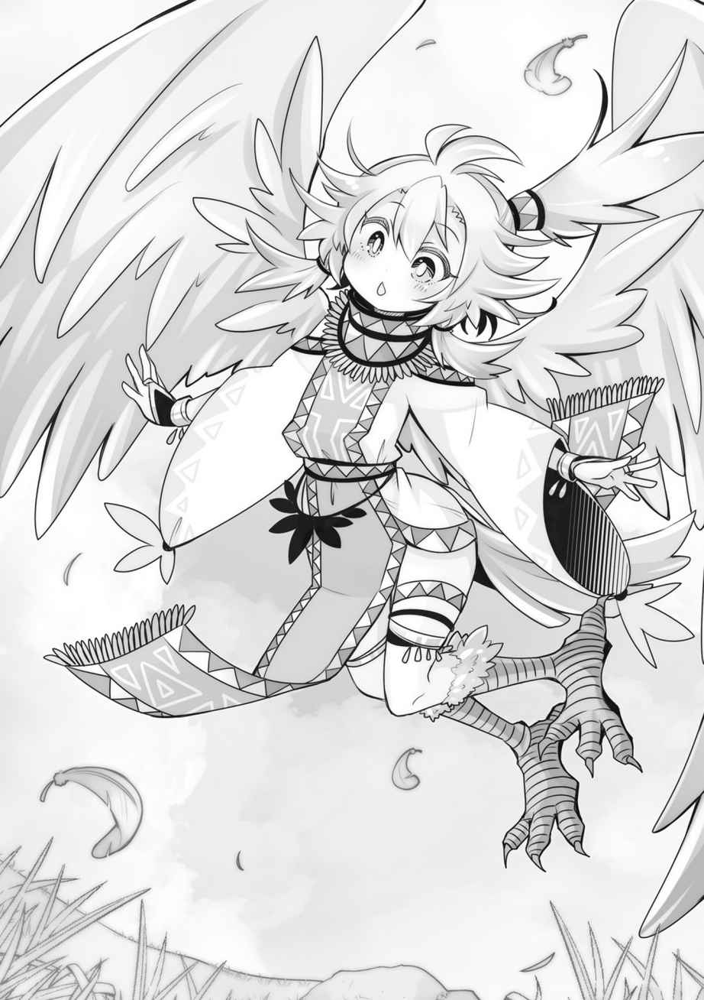

第二章
「まさか、村の出口『東』がこんなふうに役に立つとは……」
「アビちゃん、ものすごく膨れてましたけどね！」
「本当にアビスには申し訳ないと思っている……。でも体力の消耗が段違いだから……」
今俺は旅のまっただ中。目的地であるマーニ連邦へ向けて大航海の途中である。
あるのだけど──
「はーい、カイおまたせー。ミカンジュースだよー」
「ありがとう、エネル」
ガラスのコップじゃないのが残念だけど、陶製のジョッキで飲んでも美味しい！
我が開拓村で取れるミカンは人類の秘宝だな。甘酸っぱくて最の高。
「でも、カイ、そろそろ戻った方がいいんじゃない？ 一日で村にいられる時間に限りがあること忘れてないよね？」
「おっと、そうだった。安全マージン残しておかなきゃな」
「そういうこと」
俺はやれやれと腰を上げて、村の出口へ歩き出した。
東の出口から外に出ると、杭を打ち込んである船上に辿り着く。厳密には出現するというのが適切だろうか。そう、俺はワープの出口を船の上に設定して、なるべく開拓村の中にいるという作戦をとったのである。
なぜって、船の上にずっといるのは疲れるからね。
「……おかえり、マスタ」
「ただいま。なにか変わったことあった？」
「……たいくつ」
半眼でジッとこちらを見つめてくるアビス。
アビスは開拓村の中に入ると、動力源である「魔素」の急速な枯渇から息ができない感覚に陥ってしまう為、長く滞在することができないのだ。
これは開拓村に魔素が存在しないのが原因だが、今のところどうしようもない。俺自身が知覚できない魔素というものを、村に持ちこむ方法がわからないし（試しに麻袋に空気を入れて村に入れてみたがダメだった）、実際その必要性もアビスの件以外にはないのだ。
「今日はもう向こうに行かないから、なんかおしゃべりでもしてようか」
「……うん、する」
アビスは表情がわかりづらいが、俺とのコミュニケーションをしたがる所は、出会った頃から変わらない。出会いが出会いだったからか、やたらくっつきたがる所も。
まあ、春の海は普通に寒いので、体温の高いアビスがいてくれるだけで、かなり助かるのも事実だ。あったかい。
島を出て十二日。ようやく陸地が見えてきた。
目的地に対してほぼドンピシャ。羅針盤もない航海で、アビスのＧＰＳ機能はこれ以上ないほどの価値がある。普通だったら陸にたどり着けずにのたれ死にだ。
「マイロード、どうするんですか？ 上陸ですか？」
まだ陸まで距離があるが、ここから見る限りどうにも山しか見えない。というか、俺たちが住む島の大部分と同じように、海と断崖で隔てられている。その断崖の奥は山だ。パッと見て、巨大な山が海に浮かんでいるようにも見えなくもない。
それなりに大きな街があるという情報だったが、こんなに崖や山に断絶されているとは想定外だった。ぐるっと迂回するという手もあるが、位置的には山を越えればすぐに街がある……はずなんだが……。
「……どうしようかな」
悩む。山越えはリスキーだ、だが、迂回しているような時間はあるだろうか。
元近衛隊員が街の場所を知っていて、地図にも印がしてある。特徴的な地形だし間違いようがない。それに、今回のメンバーの実力を考えれば──
「やっぱ山越えしよう。悩む時間がもったいない」
そういうことにした。懸念の一つだった「船をどうするか」という問題も、人に見られる心配がなければ開拓村にしまってしまえば済む。港でなくても、浜辺近くに人がいる状況だったのなら、それも叶わなかったのだ。
前回はイカダだったから乗り捨てても良かったが、今回の船は乗り捨てるには惜しい。木材も沢山使っているし、島に戻ってからもちょっと沖に出ての釣りや網を使った漁なんかに使うことができるのだから。
「山ですね！ モンスターの気配を感じます」
陸地に近づくとレンが鼻をひくひくと動かしながら、そんなことを言った。
実際、山だ。陸側がどうなのかは不明だが、少なくともこちら側は完全に未開発らしい。
人手が入った様子は見られないし、東西に延びる陸地は、見える範囲でどこまでも山が続いている。
まるで上陸を阻むかのようだ。こちら側の海に出て漁をしたりしないのだろうか？
断崖のすぐ側にまで船を着け、そこからはアビスに「村の出口（東）」を持って崖をよじ登ってもらう。大人モードのアビスは身体強化に魔力を割くことで、レンと同等以上の身体能力を発揮することができるのだ。
一旦アビスが上まで登り、杭を刺したのを確認してから船とレンごと開拓村に入り、二人で村の出口（東）から出た。一瞬で、アビスが杭を刺してくれた地点に移動する。
「アビス、街があるとされる場所まで距離はどれくらい？」
「……距離はそんなにないと思う。半日くらい。迂回した場合は……たぶん四日くらいかかってたと思う。私がわかるのは古い地形だけど、ここはずっと山が続いてるはず」
「また変なところに街作ったんだな」
普通は街って海沿いに作るものじゃないのかな。山に囲まれた場所に街を作る意味なんてあるのか？
「とにかく山越えしよう。モンスターが出るかもしれないから、戦士君とレンとアビスは護衛を頼む」
「……まかせて」
「どんなモンスターも丸焼きです！」
「オサオサー！」
そうして俺たちは鬱蒼とした道なき道を登りはじめた。
──のだが。
「よし、みんなで登る必要ないなこれ」
すぐに諦めた。外から見るよりも山は険しく、アビスやレン、戦士君たちならともかく、ただの人間であるところの俺には登るのが難しかったのだ。
「……じゃあ、どうするの？ マスタ。迂回する？」
「いや、さっきと同じことをしよう」
「さっき？」
「アビスかレンに、いいところまで登ってもらってから、ワープで俺も移動する」
「あー、なるほどマイロード！ ズルい！」
「ズルいは余計でしょ」
いや、ズルいのは間違いない。自分だけテレポートして楽しようとしてるのだから。
「じゃあ、わたくしちゃんとアビちゃんで登りますから、マイロードは戦士君と待っていて下さいね！」
「……いってきます」
「ちょっとちょっと、待ちねぇ待ちねぇ」
勢いで突っ走っちゃいかんよ。
「杭を刺した合図を決めておかないと」
「あー！ そうですね。じゃあ、魔法を空にでも撃ちますか」
空に魔法って、近くに街があるかもしれないのに目立ちすぎるでしょ。いきなり山が火を噴いた感じになるんじゃないの。
「真上じゃなくて、海に向けて斜めに撃つようにしようか」
「じゃあ、そうします！」
アビスとレンが山を軽い足取りで登っていく。気付けばアビスは大人の姿になっていた。大人アビスは身体強化の魔法を使っているからだが、レンは素で運動能力が高い。金色の種から出た金色戦士君がレンなのだから、ある意味当然なのかもしれないが……。
待っている間にヤギみたいなモンスターが一体出たが、戦士君たちが撃退してくれた。石製の武器しかないが、なにせ戦士君は数が多い。モンスター一体くらい問題にならない。
山のほうからも、時々戦闘音と獣のうなり声が響いてくるので、アビスとレンもモンスターに襲われているのだろう。アビスはあまりモンスターに襲われる体質じゃないから、レンだけが狙われているのかもだが。
そんなこんなで三十分。
レンの魔法による合図があったので、開拓村から「東」の出口を経て、レンとアビスがいる場所までワープした。
景色が一気に移ろう。もう中腹より少し上くらいだという。
ここからはなだらかな登りで、切り立った部分もないし、俺でもいけそうだ。
「……思ったよりモンスター多いから、気をつけてねマスタ」
「まー、わたくしちゃんがすぐに返り討ちにするけどねー」
本来なら危険な山なのだろうと思うが、このメンバーなら危険はなさそうだ。が、想像以上に山深い。植物の背も高いし、鬱蒼としていて山の向こうが見渡せるポイントがない。
「しかし、街の近くのはずなのに、やけに自然豊かだな……」
ほとんど全く手付かずの自然だ。
猟師が定期的にモンスター駆除に訪れているという様子もない。
「こんなにモンスターがいるんじゃ街に住むのも危なそうだよな。高い塀で護ってるのか？ あるいは俺たちが間違えていて、こんな場所に街などないのか」
「それとも戦える人間が多いんですかね？」
「魔王の城の近くにある人間の村みたいにな」
まあ実際にはモンスターなんて、そうは外に出てこないのかもしれない。
うちの島だって、モンスターを島からすべて駆逐し尽くしたわけでもないだろうが、わざわざ近寄ってくるやつは希だ。
「とにかく行こう」
まあどうせ街に着きさえすれば答えはわかるのだ。
「おかしい……。なんかずっと同じ所回ってるような気がする……」
「……ちゃんと進んでるよ？ もうすぐ頂上」
「あ、そうなの？」
ちゃんと進んでいたらしい。これアビスがいなかったら１００％遭難してるぞ。地形もひたすら登ってるわけじゃなく、案外アップダウンもあるし。
頂上についたら山の向こう側の様子も確認できるだろう。すでに夕方近いから無理に下山せず、落ち着けそうな場所で一泊したほうがいいかもしれない。
なぜなら、すでにけっこう疲れているからだ。船旅の後なのに、強行軍で山登りを始めたのは失敗だったかな。なんかちょっと肌寒くなってきたし。
「ん？ マイロード、空からなにか来ます！」
「……ほんとだ、おっきい鳥かな？」
レンとアビスが身構える。また新しいモンスターだろうか？
空を見上げると、確かに大きめの鳥のシルエットがこちらに近づいてくる。詳しい姿は逆光でわからない。
「モンスターか？ 先制攻撃しないのか？」
「待って下さい、あれには攻撃の意思を感じません」
レンがアビスや戦士君を制止する。
鳥のようなものは、俺たちの前にフワリと降り立った。二足歩行の──
「……鳥？ ……いや、人間なのか……？」
人間……それも、ちょっと派手な服装をした可愛らしい少女だ。
しかしその背中には、うっすらと青い大きな翼がある。
鳥人間というべきか、天使というべきか。いや、足が鳥みたいな鱗っぽい足だ。
「あなたたち、こんな場所でなにをしているの？ 遭難したの？」
普通に話しかけてきた。モンスターではない。亜人というやつだろう。
「い、いやぁ。まあそんな感じです。街に行きたかったんですが……」
我ながら苦しい言い訳だ。まさか、空から地元の人が飛来するとは誰が想像しようか。
「この山が立ち入り禁止なのは知っているよね？」
立ち入り禁止か。人の手が入っていないのも、それが理由だろう。
「知りませんでした。別の島から来たもので……」
もうある程度は正直に話すより他にない。
俺は、少し離れた島から来たこと。街に行きたかったが裏側に出てしまったこと。山を越えればすぐだと思ったことなどを話した。
「そっか……遭難……。ねえ、一つだけ教えて欲しいのだけど、そっちの娘たちはあなたの奴隷？」
ん？ なんで急にそんなことを訊くんだ？
「奴隷じゃないです、二人とも俺の家族ですけど……なにか？」
「ふたりとも獣人なのに？」

「獣人？」
レンはまさに獣人だ。キツネ娘だ。
でもアビスは？ ツノが生えてるからか？
「いや、こっちは獣人ではないんですが……まあ、とにかく奴隷ではないです」
「そうなんだ……。あなた人間よね？ ふーん。ところでもう夜になるけど、これからどうするの？」
また話を変えてきた。奴隷云々にどんな意味があったのかは不明だが、キツネ耳やツノが珍しかったからだろうか。
「頂上のあたりで一泊してから、街を目指すつもりですけど」
そこも素直に話す。俺は島でずっと野宿に近い生活を送ってたので、一日野宿するくらい余裕だ。慣れたものだぜ。
「……じゃあ、うちの村に来る？ なんにもないけど、寝る場所くらいは提供できるよ」
「近いんですか？」
「すぐそこ。この山の中だから」
こんな山中に村が……？ とも思ったが、空を飛べるのだったら逆に山の中のほうがいいのかもしれない。人間が近づきにくいだろうし。
問題は取って食われないかということだが……、まあアビスもレンも戦士君もいるのだし平気だろう。この鳥の娘からも悪意のようなものは感じない。
ファーレー教で悪魔の姿とされる白髪にツノを生やしたアビスを見ても、なんの反応もないから、ファーレー教とも縁遠い種族のようだ。
それに、せっかくのお誘いだ。野宿よりはマシというのもある。
「ではお邪魔でなければ、お願いします。あ、僕はカイといいます。こっちのツノの子はアビス、尻尾生えてるのがレン。こっちの小っこいのは──」
「へぇー、コビト族？ 昔いたって聞いたことあるわ」
「えっと………はい。そうです。名前は──たくさんいるから、まとめて戦士君と」
「オサ！」
戦士君たちはコビト族ということになった。
なかなか人種のるつぼ感出てきたな。素の人間は俺だけか。
「カイとアビスとレンと戦士君ね！ 私はリーベル。見ての通り翼人だよ。じゃあ、すぐそこだから付いてきて」
リーベルの後に付いていく。
背中の大きな羽は折りたたまれているが、生活するには邪魔そうだなという感想が浮かぶ。足も人間のソレではなく鳥だ。靴のようなものは履いていないから、つまり裸足ということになるのか。
まだ島に連れて来られる前に、この世界の亜人についての本は読んだものだけど、これが本物の翼人というやつなのだな。本によると、体が軽く、力は弱く、その代わり空を自在に飛べる種族ということだった。実際に見てみると実に不思議な気分だ。
「なんで、こんな山の中に村を作っているんですか？」
道すがら気になっていたことを訊ねてみる。
「んー。旅の人には奇異に見えちゃう？」
「そういうわけではないのですけど、街も近いらしいのに、なぜなのかなと」
俺がそう言うと、リーベルは足を止めて振り返った。
「それは……理由があってね。そうだ、この山が立入禁止である以上、君たちがこの山に入ってたのは秘密にしなきゃならないだろうけど、私のこととか村のことも……街ではナイショにしていて欲しいんだ」
「それは構いませんけど、理由を訊いても？」
「この山はいちおう聖域ってことになってるから。私たちの村も一部の人間しか存在してること知らないし。……私たちは、この山に秘密で住まわせてもらってるってコト」
「そんなこと、さっき会ったばかりの僕たちに教えてしまっていいんですか!?」
「えっ!? だって、困ってそうだったし……、もう村のこと教えちゃったしさ。なにより、カイはいい人そうだしね！」
屈託のない笑顔でそう答えるリーベル。
単純にあまり人を疑うことがない気質なだけなのか、あるいは、あまり深くは考えていないだけかもしれない。まあ、俺もよそで喋るようなつもりもないが。
「さあ、着いたよ！ ちょっと事情説明してくるから待っていて！」
ピョンピョンと跳ねるようにして村を横切るリーベル。
（貧しい村だ）
俺は、辿り着いた村の見るからに生活の苦しそうな様子に、いきなり辛い気分になってしまった。村の周りは簡単な柵で囲まれているだけで、住居は初期の開拓村とどっこいの掘っ立て小屋。モンスター対策だろうか、村の中心には篝火が焚かれ、わずかに耕された畑は雑草が伸びていて、あまり手入れされている様子はない。
畑の横には、なにか石炭みたいなものがムシロを被せられ積み上げられている。
こんな手付かずの山中にある村だ、豊かであるはずがない。周りにはモンスターも多い。
村には男性の翼人が数名表に出ていたが、リーベルが一人ずつ簡単に事情を説明してくれているようだ。
「あのマイロード、これ……宿泊は辞退したほうがいいんじゃ……」
レンは意外と状況に対して理解力がある。まあ、なんだかんだで生まれてから一年以上経つのだから、成長しているのかもしれない。
「いや、逆に泊めてもらったほうがいいんだよ」
「どうしてです？」
「泊めてもらったお礼ができるだろ」
「あっ、なるほど！」
レンが感心したように声を出す。
俺は善人じゃない。どちらかといえば偽善者だけど、こういうのは放っておけないのだ。サラたちとの事でもう自覚した。すべてのものを救うことはできなくても、自分と関わった人に少しでも手を差し伸べられればいい。それすらできないのなら、島で国を作る意味さえ見失ってしまう。
「みなさーん。事情話したから、入ってきてー」
リーベルがピョンピョンと戻ってきた。
外から人が来るのが珍しいのか、リーベルの後ろにぞろぞろと男たちが付いてきている。大丈夫なのかなこれ。ガチで男しかいないけど。
というか、リーベル以外に女性を一人も見ていない。
翼人の男たちは、どこから来た？ とか、そちらはあなたの奴隷か？ とか、リーベルと同じような質問をした。どうしても奴隷かどうかが気になるらしい。
リーベルに案内された小屋に入ってから、それとなく訊いてみる。
「え？ どうして彼女たちが奴隷かどうか訊くのかって？」
「ええ、他の人にも訊かれましたし。なんでなのかなって」
「そりゃあ、二人共獣人だから。悪い人間は獣人を奴隷にするんでしょ？」
「そうなの？」
悪い人間は獣人とか関係なく奴隷にしてるからな。一部分は正解といったところか。
「で、あなたは、彼女たちを奴隷にしていないみたいだから、良い人なのかなって」
「そんな単純な……」
かなり危うい理論を展開するリーベル。騙そうとしたらコロリといきそうなタイプだ。大丈夫なのかこの人たち……。
リーベルが小屋を提供してくれた後、少し休んでからせっかくなので村を見て回った。
村はとても狭く、ちょっとした公園程度の広さしかない。学校のグラウンドよりかは遥かに狭い。こんな山の上にあるから、まさに隠れ住んでいるというのがぴったりくる。
何を食べているのかは不明だが、どこか離れた場所にちゃんとした畑を持っているか、それとも狩りか、そうでなければ海まで降りて釣り……といったところだろう。
「あ、夕飯は自分たちで用意があるから大丈夫ですからね」
「えっ？ そうなの？ 用意したのに。……ただの麦粥だけど」
暮らしが苦しそうなのに、なんて良い娘なんだ……。
リーベルが持ってきた鍋を覗くと、粥というよりは、おもゆという感じのものだった。そして、それでもお客さん用に無理をして作った気配が感じられ、俺はいたたまれない気持ちになってしまった。勢いで開拓村から食料という食料を大開陳してしまいそうになる。
「あっ、ありがとう。いただきます。リーベルさんもいっしょにどうですか。僕たちも少し食べるものを持ってきているので」
そう返事するのがやっとだった。まさか本当に開拓村から食料を大量に出すわけにもいかないだろう。
事前に出しておいた蒸かしイモを四つ、バナナの皮に乗せてリーベルに差し出す。
「わぁ、おイモだ。いいの？ もらっちゃって」
「僕たちはお粥もらいますから、どうぞ」
「じゃ、じゃあ貰うね！ ありがとう、みんなで食べるよー」
そう言ってはにかみ、リーベルは大人たちのほうへ走っていった。
圧倒的な現実感を突きつけられて、俺もレンも押し黙ってしまう。アビスはあまりよくわかってないのだろうが……。
「……カエデは連れて来なくてよかったな」
「はい。でもカエちゃんってあれでけっこう大人ですからね。何も言わずに飲み込むと思いますよ」
「レンはよく見てるな」
レンはハイテンション系だがバカではない。というか、けっこう賢い。伊達に金戦士じゃない。麦粥は俺とレンで食べた。塩の味がしたよ……。
日が暮れる前に、なんとなく村を歩いて回った。
変に詮索するつもりもなかったが、なぜ彼らがこんな場所で暮らしているのか、いまいちよくわからなかったからだ。この山が立ち入り禁止になっている理由もまだ不明だ。
隠れて暮らしているわりには俺たちに初見から親切だった。
俺がほっつき歩いていても、男衆はにこやかに挨拶をしてくるだけで、誰も行動を咎めたりはしてこない。村の存在は秘密でも、村そのものには秘密はない……ということなのだろうか。
（…………ん？ あれは石炭なのかな）
ムシロを被せた石炭のようなものが積み上げられている。燃料用だろうか？
（いや、違うぞこれ）
大きさは、それこそ人の頭ほどのサイズのものから、握りこぶしほどもないものまで、マチマチだが──
（なんだこれ、重い）
手に取った瞬間の違和感。比重が違う、石炭ではない。
（石じゃない……、鉄……なのか？）
鉄鉱石？ でも、鉄鉱石ってこういうものだっただろうか。
「その石に興味があるの？」
「わぁ！」
後ろから突然声を掛けられて、心臓が飛び出しそうになる。
振り返るとリーベルだった。
「いや、なんだろうなと思って見てたんですけど」
「それ鉄の元なんだって。私たちは、その石を拾う仕事してるんだ」
「おお、そうなんですね！」
なんだ、いきなりビンゴじゃん！ これが鉄の元なら、これを仕入れさせて貰えば、今回の旅の目的が一つ、達成できてしまう。
てか、仕事内容も別に秘密にしてないんだな……。
「これって、譲ってもらえないですかね？ もちろん十分な対価はお支払いしますけど」
「こんなのが欲しいの？ う～ん、譲ってあげたいのは山々なんだけどさ、これ全部先約があるんだ。ごめんね」
「ああ～、じゃあ仕方ないですね……」
これだけの鉄なら売ればかなりの金になりそうだ。そのわりに村が貧乏そうなのは解せないが。鉄の価値が低い……とか？ いや、鉄の価値なんてそう大きな差があるとも思えない。マーニ連邦は前回行った街から、距離で言えば北海道から九州程度しか離れてない。船が普通に存在している世界で、価格の隔絶がそこまであるわけがない。
ボラれてるのか……？ その可能性は高いような気がする。
「じゃあ、次に集まった時は僕が買うってのはどうですかね。たぶん、先約の人より良い条件出せると思いますけど」
俺がそう提案すると、リーベルは申し訳なさそうに頭を搔いた。
「ごめん！ あともうちょっとだけ……なんだけどさ。約束しちゃってるから……。次がいつになるか、わかんないし」
「そう……ですか」
長い契約なのだろうか。やっぱりなにか騙されてるのではないかという気がするが、完全な部外者の俺にできることはない。その先約の人から契約をまるごと買い取るとか、そういう方法はあるかもしれないが、さすがにそこまでの資金は持っていない。
結局、鉄は諦めざるをえず、その日はそのまま休ませてもらった。
そして深夜。
「……マスタ、起きて、マスタ」
「誰か来ます」
アビスとレンに起こされる。外はまだ暗い。
──なんだ……？
確かに外から複数の足音が聴こえてくる。こんな深夜に用事があるとも思えない。しかし、足音は真っ直ぐにこちらへ向かってくる。
「敵意は感じられませんが……なんでしょう……？」
レンはそういった機微に敏感だ。殺意や敵意、相手の気配。獣分が多めだからなのか。
「わからんが、出たとこ勝負でいいだろう」
俺たちがそんな話をしている間にも、足音が小屋の前まで来た。そして──
「あ、あのー……お休み中のところ悪いんだけど、起きてー！」
普通にリーベルが起こしに来た。
「どうしたんですか、リーベルさん。まだ、夜中ですよね？」
「あっ、起きてた？ えっとね、昨日お父さんと話したんだけど、夜中のうちに街の近くまで送ってあげたらって話になってさ」
ありがたいけど、なぜにこんな夜中に。
「昨日少し話したけど、この山って立ち入り禁止になってるんだよね。山の入り口にも、一日中人が詰めてるの。だから、普通にカイたちが降りていったら尋問されちゃうんだって。だから、夜のうちに、向こう側に下ろしちゃえば大丈夫だからって」
「一日中詰めてるって……、街の人間がってこと？」
「うん。街の人には私たちのことも秘密だから。だから、カイたちもナイショにしててね」
「そりゃもちろんだけど……」
「うん！ じゃあ支度して！ 明るくなってからだと見つかっちゃうかもしれないから」
支度というほどの支度はないが、こういう展開は予想していなかった。
リーベルが小屋から出たので、昨日の内から開拓村で用意しておいたお礼を用意する。昨日、イモを嬉しそうにどこかへ持って行ったから、無難にイモにしておいた。イモなら日持ちもする。開拓村特製の水瓶に目一杯イモを詰め込んで、部屋に置いた。
「これだけあれば、しばらく食料に困らないだろう」
「三百個くらいありますもんね」
準備を終えて、外に出ると村の男たちが総出で待機していた。
「あれ？ コビト族の子たちは？」
「……ああ、俺の祝福の能力でね…………小さくなってカバンに入ってるんだよ！」
「そうなんだ！ カイって祝福者だったんだね！」
「ええ、まあ、そうだね。そう」
思いつきで変な噓をついてしまった。いや、開拓村というカバンに入っていると考えれば噓とは言えない……。というかどっちにしろ一言じゃ説明できないし。
「じゃあ、三人でいいってことね。これに乗って！ ちょっと揺れるけど」
「これ……？」
幅広の布である。それが四本に分かれて、それぞれ男たちの胴体に括り付けられている。
嫌な予感しかしない。
「まさか、その……空を飛ぶってことですか？ 秘密の道から抜けるとかじゃなく？」
「そりゃそうだよ！」
俺は覚悟を決めた。
翼人たちが羽ばたき、フワリと浮かび上がると、俺を乗せた布がピンと張り、ゆっくりと空中に浮かび上がってくる。月明かりだけの空は、闇に溶け込んでいくようで普通に怖い。すぐに地面との距離すらわからなくなってしまった。
そうして翼人たちに命を預けて三十分。
街の明かりがボンヤリと見える、周囲になにもない草原の上に下ろされた。
「はぁはぁはぁ……スリルあったなぁ」
「……おもしろかった」
「ねー、マイロードは怖がりですね！」
アビスとレンは平気だったようだが、俺は怖かった。高いところが苦手という意識はなかったのだが、夜中のフライトは少し違うようだ。地面との距離感がないの怖い。
「じゃあね！ ひさしぶりに外の人とお話できたから楽しかった！ 街はほらすぐそこだから、ここで朝まで待ってから入るといいよ」
「僕たちも助かりました。本当にありがとう！ 借りてた小屋にお礼置いておきましたから、みなさんで食べてください」
「ん？ ありがとう！ じゃあねー」
リーベルたちはさっぱりした挨拶と共に、また飛び立っていった。
◇◆◆◆◇
「さて、朝までに準備しちゃうか」
前回、スコルパの街に行ったときと基本的に流れは同じだ。
お金を稼がなければならないので、荷車に物資を満載して街に持ち込むこと。
あとは、アビスとレンの姿の問題だ。
アビスの姿は神殿が「悪魔」と称しているものと同じなので当然隠す必要があるが、レンについても耳と尻尾は隠しておいたほうがいいだろう。最悪、開拓村の中で待機してもらってもいい。
「アビスとレンはこれ着て」
もともとアビスとレンを連れてくることは決まっていたので、事前にコロモに上手に耳が隠れつつ、うっかりフードが脱げることもないパーカーを作って貰っておいた。レンの尻尾もフレアスカートの中に上手に隠せる仕様だ。
二人が着替えている間、俺は開拓村を訪れ街に持ち込む品を考えることにした。
「今回はかなり売り物がある状況なんだよな……。でも、鉄や薬も買うし、他にも欲しいものあるから、前回より稼ぎたい……」
「どうしたのカイ。もう決めてあったんじゃなかったの？」
悩んでいるとエネルがゆで卵を食べながらやってきた。
こいつは本当にいっつもなにか食べてるな。
「うん……そうだったんだけど、ちょっとした出会いもあったから。茶碗とか売ろうと思ってたけど、食料メインの方がいいかもしれない」
「まあ、無難だからねぇ。陶器はかなり出来の良いものが出来てきてるけど、結局食べられるものでもないから」
食いしん坊のエネルが言うと変なバイアスが掛かるが、しかし、そういうことだ。
例えば、俺が地元の商人だったならば、出来の良い茶碗なんかを高額で売るツテを持ってたりするのかもしれないが、ゆきずりでは難しい。
その点、食べるものなら間違いがない。まあ、地域によって需要の違いはあるだろうが、リーベルの反応を見るに、イモなら大丈夫だろう。
結局、各家畜を一組ずつと、イモ、小麦、タマネギ、ミカンを大きな麻袋で荷車に積めるだけ積んでみた。陶器は売れそうなら出すということにしよう。
「そろそろ朝かな。レン、羊と水牛を逃がさないように気をつけて」
「大丈夫ですよ。わたくしちゃん、動物ともしゃべれますから」
「すげーな。百獣の王かなんかなの？」
レンは元々戦士君語も異世界語も日本語もできてたわけだし、さらに動物語？までいけるとなれば、マルチリンガルもいいところだ。
日が出てきたので、街に向けて歩き出す。
俺たちが来た山からはけっこう離れているようで、遠くに稜線が見える程度である。
見えてきた街は、かなり古くからある街のようで、所々崩れた白石の外壁が時代を感じさせた。東から延びる水道橋が印象的だ。
一度西側の街道方面に出てから、街の入り口を目指す。
前回訪れたスコルパの街は、入り口でチェックなどなかったが……この街は大丈夫なのだろうか？
…………大丈夫だった。
一応兵士らしき男たちが詰めてはいるが、明らかな無頼者なんかの侵入を阻止したり、緊急時に門を閉めたり、閉める時間を稼ぐのが仕事なのかもしれない。
俺のような荷車を積んだ商人を止めても利益がないし、コッソリ侵入しようと思えば、外壁なんてほとんど用をなしてないのだ。入り口で検問をやる意味はあまりない。
さて、街はほとんどすべて石畳で舗装され、石造りの建物は二階建てのものが多い。
どこにいても目に入るほどひときわ目立つのは街の中心近くに建っている城めいた建築物。通行人に訊くと、ファーレー教の聖人を祭る大聖堂で、この街のシンボルなのだとか。
どうやら、かなり神殿の勢力の強い街のようだ。普通に過ごしていれば問題ないだろうが、いちおう気をつけておこう。
他に変わった事と言えば、真っ白な麻の貫頭衣を着た一団があっちこっちウロウロしていて、異彩を放っている所か。みんなかなりの大荷物を背負っている。旅行者だろうか。
「とりあえず情報収集からだな。どっかでメシでも食いながらにするか」
昨晩は麦粥涙粥だったから、油でギトギトの肉とかが食べたいぞ。
スコルパの街でもそうだったが、この街にも屋台が出ている広場があったので、適当に肉串などを食べながら情報収集をした。地域が変われば常識も変わる。知っておきたいことは多い。こういう時、屋台の親父などは、気兼ねなくなんでも訊けるので頼もしい。
「……というわけで、ある程度は聞けた」
「どうでした？」
「まず、この街の名前はザックス。何百年もの歴史がある都市なんだと。まあ、古都だな。かつて近くの山で修行したルキアという聖女を祭っているのが、あのデカい聖堂でファーレー教の四大巡礼地の一つなんだとさ。四つ全部回ると御利益があるらしい」
あの貫頭衣の一団は、つまり巡礼者なのだ。それにしても──
（ルキア……）
屋台の親父からその名が出て、さすがにドキッとした。
ルキアは俺の妹の名前だ。妹と俺の名前は父親が付けた。
俺と妹は拾われ子で、父親とは血が繫がっていない。俺と妹も偶然同時に捨てられていただけで、おそらく血の繫がりはないだろう。
それにしても、俺と妹の名前は、ファーレー教の聖人からとったとは聞いていたけれど、まさかこんな場所で妹の名の由来に出くわすなんて……。
元気にやってんのかな、あいつ……。
「……どうしたの、マスタ。つらそうな顔してる」
「えっ!? いや、なんでもないんだよ。ちょっと妹のことを思い出してさ。名前があの聖堂で祭っている聖女と同じなんだよ。ルキアって言って」
ルキアはお兄ちゃんっ子だったから、俺がいなくなってずいぶん泣いたはずだ。
カエデが両親に無事を伝えたいように、俺も家族には無事を伝えたい。
同時に……家族が無事でいることも確認したい。『邪神の祝福者』を出した家族が、どういう扱いになるのか。今の俺には、それを知るすべがない。
「……私も会ってみたいな。マスタの妹」
アビスが小さく呟く。俺もアビスを妹に紹介したい。あいつは妹が欲しいとたまに言ってたから、喜ぶだろう。大人モードになったらアビスのほうが、ずっとお姉さんだが。
「ルキアはお調子者だけど、気のいいやつだから、きっとアビスも仲良くなれるだろうな」
「わたくしちゃんは？ わたくしちゃんは？」
「レンはモフモフし尽くされる」
ルキアはネコとか好きだったから、レンと会わせたら狂喜乱舞してお触りするだろう。
獣人に対する嫌悪感みたいなものもないと思う。たぶん。
「でもま、俺のことはいいんだよ。先にカエデの街から見つけてやりたいからね」
「……同時に探せばいいのに」
「昔から、二兎を追う者は一兎をも得ずというものだよ」
ラベルダ王国はまだどこにあるのかイマイチわかっていない。
今回の旅でわかればいいのだが……。
食事を終え、荷車を牽いて移動する。
屋台の親父によると、この街では商業組合が商品の買い取りを一手に行っているらしい。スコルパの街のように、商人が集まってそれぞれ売買する方式ではなく、かならず役所が間に嚙むやり方だ。農協みたいなものだろうか。
この方法が良いかどうかはわからないが、商品を購入する側からするとやりやすいかもしれない。在庫さえあれば買うことができるのだから。ただ、価格については売る方も買う方も交渉の余地がないので、一長一短だ。商売の独占という見方もできる。
市場の場所を訊いたときに、一緒に奴隷商館の場所も訊いてみた。奴隷を買う為ではなく、サラの『奴隷の首輪』を外す方法を訊くためだったのだが、なんとこの国では奴隷の売買は禁止されているのだという。当然、奴隷商館もない。残念だが、サラの首輪を外す方法が見つかるのは、まだ先になりそうだ。
街の中心部からわずかに西。商業組合の市場に到着した。
組合市場はなかなか広い建物で、ちょっとした体育館くらいある場所に、所狭しと商品が並べられている。買い取りと販売を同時に行う方式のようだ。販売している人間は、商人というよりは組合の職員ということだろう。
翼人たちの村に置いてあった鉄も、ここと契約してるから売れないという意味だった可能性が高い。が、普通にここで買えるのなら問題はない。一括方式で逆に良かった。
商品の買い取りは、暇そうな職員に頼むという方式だった。
商品を荷車に積み、買い取り待ちをしている商人があっちこっちにいて、押しが弱いとなかなか職員を捕まえられない。
俺は、中でも腕利きにみえる職員に当たりをつけ、商談が終わるのを見計らって突撃した。職員はシャツの袖を綺麗に肘上までまくり上げた中年男性で、優しそうな風貌だが声が大きく、テキパキと商品を処理していて、実に仕事ができそうである。
「買い取りお願いします！」
「はい、品物のほうはどちらに？」
「あれが全部です」
俺が家畜と荷車を見せると、職員は目を見開いた。
「すごい量ですね……品質も……。いったいどこから運んで来たのですか？ ロンディーネ？ それともメティス？」
ロンディーネとかメティスというのは、近くにある街の名前なのだろう。
あいにくどこでもないが、どう答えるかは待っている間に考えておいた。
「スコルパから船で来たんですよ。いえね、うちは代々熱心なファーレー教の信徒でして、巡礼を兼ねて訪れたわけです。それで、せっかくだから商品も持ってくれば旅費の足しになるんじゃないかって話になりましてね。あ、知ってます？ スコルパ。いい街なんですよ。今は、帝国の侵攻があって少しゴタついてんですが──」
「わかりましたわかりました。スコルパからとは、またずいぶん遠いところから、ようこそおいでくださりましたね。それでは検品をさせていただきます」
セーフか。作り話でなんとか切り抜けた。
スコルパはここからかなり離れた場所だ。裏を取ることも不可能だろう。それに、貿易は遠い場所から運んだほうが儲かるのは世の摂理。なにも不自然なことではない……はず。
「これは……小麦粉ですか……？」
「ええ、小麦粉──」
いけね、製粉したのを持ってきてしまった。小麦の状態のほうが良かったか。
「スコルパのほうでは、こうして粉にして運ぶのが一般的なのですか……？」
ええい、ままよ！
「そうですね。スコルパにはいい水車小屋があるので」
「そうなのですね……世界は広い……」
なんとか納得してもらえたようだ。普通に考えて製粉したものを船で運んでくるとか、考えにくい。米でいうなら農家が精米した米を農協に卸してるようなものだ。
まあ、文化の違いということで、納得していただこう。
「えっとあとは、こちらはイモ……ですね。この辺りではあまり食べないのですが」
「そうなんですか？」
なんだ、リーベルが嬉しそうにしてたから、イモの需要が高いと踏んだのに。
「いえ、もちろん作られてはいますが、家畜の餌にすることが多いので……こちらは、あまり良い値段は付けられません」
「は、はあ」
イモが家畜の餌か……。お礼にイモを大量に残してきたの失敗だったかな……。変な意味に取られてなきゃいいけど……。
「こちらの果物は初めて見ますね。なんというものですか？」
「あー、ミカンです。一つ食べてみますか。これはうちの主力商品でしてね。最高ですよ」
ミカンは開拓村の一番最初の特産品でありながら、今でもずっと特産品から外れることなく君臨し続けている。ちなみに今の特産品は『ミカン』『小麦』『陶器』である。
水牛君はわりとすぐ特産品から外れた。水牛は特産というより労働力の面が大きいからかもしれない。もちろん、開拓村からは革も肉もツノから骨まで取れるのだが。
ミカンを剝いて職員に手渡すと、少し訝しむ表情をした後、口に放り込んだ。
「ん？ おお……甘いですね。それに、とてもスッキリした味です。これは美味しい！」
「でしょう！ まあ、そのぶんお値段は少し高めで出しているので、こちらでも買い取りはそれに倣っていただきたいわけですが」
「ええ、ええ。珍しい果物ですからね」
あれだけ大きい聖堂があるのだ。高級果物も神殿関係者なんかに需要があるだろう。
職員は、その他の家畜なども検品し、一度事務所に戻ってから（どうやらミカンの値段を協議してきたらしい）最終的に価格を提示してきた。
「やはり水牛と、ミカン……でしたか、あの果実がいいですね。まだこの街には入ってきていないものですし状態も良かったので、かなり色を付けさせてもらいましたよ」
確か、前のスコルパの街でも水牛とミカンは大人気で、すぐに売り切れてしまったものだ。この街でも同じように需要があるようだ。
職員から、金額の説明を受ける。ＯＫであるならば、事務所でその金額を受け取るというシステムらしい。もちろん、金額が気に入らなければ、売らないという選択肢もある。
「これは…………内訳も見せてもらってもいいですか？」
「もちろんです。先程も申し上げましたが、イモはあまり値が付けられませんでした」
内訳表を見せてもらう。やはり水牛とミカンが断トツで高値だ。ついで羊。小麦粉もそれなりの量だったから、ちゃんと値が付いている。開拓村産の小麦粉は虫が付いていないし、実際出したばかりだから状態もよかったのが幸いしたか。
「問題ありません、これでお願いします」
値上げ交渉は行わない。現段階で、前回スコルパで商品を売った金額をはるかに上回っている。新築で家が立つような金額だ。
お金を受け取るため事務所へ赴き、売買証明書にサインする。
（名前……どうしよう）
一瞬、躊躇する。俺のフルネームは『カイ・ハスクバーナ』だが、ここでそれを書いてしまっていいのだろうか。こんなの、ただの名前でしかない。別に偽名でもいいわけだが。
（偽名にしておくか）
少しだけもじって「アイ・アラビアータ」と書き、料金を受取る。とりあえず、これでミッションの一つは無事終了だ。
「巡礼が終わったら、またこちらで商品を仕入れて帰ろうと思うのですが、鉄はこちらで買えますか？」
「鉄……といいますと？ 鉄そのものですか？」
「そうですね。できれば素材の段階の……砂鉄とか鉄鉱石のようなものがいいのですが」
鉄のインゴットでもいいかなと思うが、開拓村にそれを持っていっても加工品扱いにしかならない。つまり製鉄はスタートしないだろう。
俺が狙っているのは、あくまで製鉄そのものを開拓村が始めることだ。
あの翼人の村で、あれだけの鉄の元を扱っていたのだ。ここで当然買える、そう思っていたのだが──職員は申し訳なさそうな顔をして頭を下げた。
「すみません、うちには鉄……置いていないんですよ。この国では製鉄は材料の調達から製造まで、神殿が一手に担っておりまして。原料はおろか、製品すら神殿を通して発注する有様でして……」
神殿が!?
「そんなことありえるんですか？」
神殿がいくら力を持っていると言っても、鉄は国の基幹を成す材料だ。
「それがありえるんです。この国では」
「つまり、事実上の宗教国家ということですか……」
「あまり大きな声では言えませんが、そうです。というよりマール連邦の州同士を結びつけているのが神殿なので…‥」
職員は声のトーンを落としたが、おそらく公然の秘密の類だろう。
しかし、これでは間違いなく今回も鉄を買うことができない。
「鉄製品なんかはどうしてるんですか？ いくつか欲しいものもあったのですが」
「さすがに、街の鍛冶屋や道具屋には出回っていますよ。注文もできます。ただ、大本を神殿に押さえられている……というだけで」
「そうですか……」
まあ、最悪商品を大量に購入するという方向性でいくしかない。村の人口の少なさを考えれば、実用上はそれでも問題はないだろう。
本当は、兵力という意味でも鉄が欲しいのだが。
……というか、翼人たちがあの鉄を俺に売ってくれなかった理由は判明したな。買い取っているのは神殿で、村の生活を見るに相当安く買い叩いている。
やっぱり神殿汚い。
◇◆◆◆◇
とりあえず、現金を手に入れたので、荷車を牽いて組合を出た。
「……マスタ、いまのところで買い物はしなくてよかったの？」
アビスが不思議そうに訊いてくる。
「一応、一家総出で巡礼に来てるなんて噓ついちゃったからね。まあどうせ一泊はするし、明日でもいいかなって。情報収集もしなきゃならないし」
「……そうなんだ」
それに、一番の目的である薬を神殿で買うのが先決だ。
「先に宿も取っておきたいしね。というか、大丈夫かこれ」
外を歩いていると、朝方よりも巡礼者が増えている。どこからやってくるのか、もしかするとマール連邦の色々な島々からやってくるのかもしれない。
それとも、聖人ルキアが特に人気があるということなのだろうか。
「さっきの職員さんから、おすすめの宿を教えてもらったから行ってみよう」
巡礼者が多い街だけあって、宿の数そのものは多いらしい。宿には共通の看板があるし、どうしてもなければ野宿でもいい。我ながらたくましくなったものだ。
宿に到着し、受付で飛び込みだが空いているか訊くと、空いているという。
なんでも巡礼者は神殿が用意した詰め所に寝泊まりする場合がほとんどで、高い金を出して宿に宿泊する人はあまりいない……ということらしい。
金を払い部屋へ案内される。宿の部屋は大部屋と個室の二種類があり、個室は少し割高となるが、カギもあるし訳ありな俺たちとしては、その部分の出費をケチる意味はない。
「さーて、やっと落ち着けるな。みんなお疲れ様」
「……おつかれさま。マスタは身体が弱いんだから、あんまり無理しないでね。もう寝る？」
アビスはユーリに過保護と言われていたが、確かに過保護だ。まだ昼前だよ。
というか、人造人間のアビスや、金色戦士なレンと比べたら、確かに格段に身体が弱いというのも事実なのが辛い。実際、この三人で一番疲れているのは俺だろう。
二週間弱にも及ぶ船旅からの、山登り。翼人の村のバラックで一泊。夜中に起こされて、恐怖の翼人パラグライダー。疲れていないわけがなかった。
「いや、さすがにまだ寝ないよ。できることはやっておかないと……」
寝たい気もするが、なにか一つでも片付けておきたい。
「とりあえず、カエデの実家確認だけしておくか。城もないし街の名前も違うが、あの聖堂を城だと思っていた可能性もある」
実際のところその確率は低いだろうが、旅行で来たことがある……なんて可能性もある。もう一度、商業組合に行ってカエデの故郷の街『ゴディエ』のことを知っている人がいないか探してみてもいい。巡礼者がこれだけ多いのだし、そういう情報は得られやすいのではないか。うまくすればラベルダ王国の位置も分かるかもしれない。
俺は『村の出口（東）』の杭を取り出し、部屋のフローリングの穴が空いている箇所に突き刺した。これで、出口ポイントとして設定完了である。
「じゃあ、すぐ戻ると思うけど、いちおう島の様子も見てくるから、休んで待っててくれ」
「……いってらっしゃい」
「あっ、風邪の子がいたら、人数数えてきて下さい。薬買えたらすぐ飲ませられますから」
「了解！」
というわけで、開拓村経由で一度島に戻ることにした。ワープポイントを設定できる、「村の出口」は本当に便利だ。俺は開拓村を歩いて「北の出口」から出た。
そこは見慣れた島の大樹の根本。「村の出口（北）」の杭を突き刺してある場所だ。
とりあえず辺りには誰もいない。
（この時間ならお昼を食べてるとこかな）
屋敷を見に行くと、ちょうど食事中でメニューはうどんだ。
ここ最近はもうすっかり麵類が主食になってしまった。ここがうどん県になる日も近い。
「みんな、ただいまー」
驚かせようと思って、唐突に部屋に入ると驚いた何人かの鼻からうどんが飛び出した。
ある意味、感動的なほどだったが、さすがに怒られた。
島のみんなには手早く事情を説明してから、カエデを連れて「東の出口」から宿に戻る。
「すごいね、お兄ちゃん！ 島以外の場所久しぶり！」
宿から外に出たカエデは、感激の声を上げた。
カエデは、ほぼ一年島で暮らしていたのだ。もしかすると、一生外に出ることができないと悲観していた可能性すらある。ふと、カエデの横顔を見ると、涙が光っていた。
「それで……どうだ……？ 知ってる街か？」
そう訊ねると、カエデは無言で小さく首を振った。
やはり違うのか……。万が一の可能性を信じたかったが、残念だ。
その後、カエデの住んでいた都市を知っているものがいないか、聞き込みを行った。この街には、たくさんの旅行者が来ている。旅行者ということは、ある程度地理には詳しいだろう。そうでなければ、この世界で旅などできるはずがない。
巡礼者を中心に、何人かに話しかけてみたが、ゴディエという名の街を知っているものは見つからない。大きな城のある街だ。有名な街に違いないのだが……。
しかし、声を掛け続け、何十人目かの男から、少し良い反応があった。
「ゴディエだって……？ あー、どっかで聞いたことあるな。なんだったか……」
「な、なんとか思い出してください！」
「街の名前だろ……城がある……えー、確かあれは軍を辞めてから巡礼に来たっていう人に聞いたんだったかな。ああ！ そうそう！ 帝国だよ。ライムリーグ帝国の軍人だ！」
「帝国ですか！」
ライムリーグ帝国は、ユーリたちの国『モンディアル公国』を滅ぼした国だ。島から見て西側の大陸のほとんど全土を掌握しているらしい、大国である。
「その人がゴディエから来たと、確かに言っていた。帝国でも特別古い街で、昔は首都だったとか言っていたな。今はもっと良い土地が手に入ったとかで、首都を移したそうだが」
古都なら城があっても不思議じゃない。これはビンゴだろう。
「場所はわかりますか!? 地図で、だいたいこの辺りという程度でいいんです！」
「あー、さすがに場所はわからないよ。悪いな、兄ちゃん」
場所はダメか。まあ人に聞いた程度ならそうだろう。地図がある世界で生きていた俺でも、日本の名前だけ知る市の場所を訊かれたら、答えられない。
「ありがとうございました！ これ、よかったら食べてください」
「おっ、なんだいこれ。わりぃな」
お礼にミカンを渡して、いったん宿に戻った。
「やったな、カエデ。街の場所はまだだけど、帝国の古い街だってことはわかったよ。そこがわかってれば、あとは帝国人を見つければ、探しに行ける」
「ホント……？ また、パパとママに会える……？」
「ああ、すぐには難しいかもしれないけど、必ず」
「よかった……。ありがとう、お兄ちゃん」
もしかすると、『邪神の祝福者』の身内ということで、カエデの家族にも、なにかある可能性があるのだが、今はそれを考える必要はない。考えても答えは出ないのだから。
◇◆◆◆◇
カエデを島に送り届けて、次の日。
俺はアビスを宿に残し、早朝から神殿を訪れていた。レンは開拓村で待機。
理由はもちろん薬を買うためだ。アビスは神殿が定めるところの悪魔の姿だし、レンもあまり普通の容姿とは言い難い。俺もアラミラの祝福者であり、ちょっと危ない気もするが、そこはまあ聖印を見られなければ問題ないだろう。
神殿で販売している水薬は、いくつかのランクに分かれていて、最高ランクのものは、いわゆる「特効薬」だ。
どんな病気にも効くし、どんな怪我も治す。
その代わり、値段も天井知らず。というか、俺も詳しい価格は知らない。
まあ事実上の命のスペアだ。値段が高くなるのは仕方がないのかもしれない。
今回、俺が欲しているのは一般的なランクの薬である。それでも一般的な月収分くらいの値段はする。神殿は収入源が多いが、この薬の販売だけでも相当な収益だろう。
昨日、村に戻ったところ、五人も風邪をひいていて、そのうち二人は寝込んでいた。
五人にはすぐに飲ませるとしても、余分も欲しいわけで、多めに買っておきたい。
神殿の入り口には、何人かの衛兵がいる。中にも数名。売店にも数名。
彼らは「神兵」と言われる神殿の兵士であり、事実上の軍隊であると言われている。普通はそんなもの維持できないと思うのだが、神殿はできる。それだけ、金があり、力があるということだ。
ちょっとビビりながら売店で薬を購入した。かなりの高額ではあるが、次に買う機会がいつになるかもわからないので、奮発して三十本も買った。
普通に購入できてしまったので、少し拍子抜けしたが、よく考えるまでもなく、商売なんてものは売れればいいのである。誰が買ったかなんて、小売りでいちいち考えるわけがないのだった。いちいちビビりすぎているのかもしれない。神殿は苦手だ。
薬が買えたので、急いで宿まで戻り一度開拓村経由で島に戻った。
サラに薬はすべて渡し、風邪の五人にはさっそく飲ませてもらう。
薬の効能は凄まじく、フウフウと息を荒くしていた元近衛隊員も、アッと言う間に穏やかな寝息に変わった。これなら、すぐに良くなることだろう。
神殿は悪いやつが多いが、祝福者の能力は本当に便利だ。
島から、またザックスの街に戻り、再び神殿へ。売店を再度訪れ、今度は鉄が買えないかを訊ねてみた。ダメで元々、何事もやってみなければわからない。
──が、予想通りに断られてしまった。そもそも材料の小売はしてないとのこと。
「ではどこで仕入れているかだけでも！」
「あー、すみませんね。街の鍛冶屋に行けば購入できますので、そちらへどうぞ」
「いえ、素材のほうが欲しいんですよ」
あーでもない、こーでもないと粘ってみたが、最後には屈強な神兵のオッサンにつまみ出されてしまった。
こうなったら、翼人の村の鉄をなんとか分けてもらうしかないだろうか。運ぶ人がいるだろうから、それに袖の下を握らせれば、不可能ではないような気もする。
とにかく、村に根付く程度には鉄の素材が必要だ。
（どうすっかな……）
鉄を手に入れられなければ、何のためにここまで来たのかわからない。
そんなことを道端で悩んでいると、ファーレー教のエンブレムをつけた、なかなか金のかかってそうな荷馬車がガラガラと運ばれてきた。
「……ん？ あれって……」
荷車の荷物のほとんどはムシロで隠されているが、見える位置に、見覚えのある水瓶が置かれている。いや、見間違えることはありえない。俺が開拓村から出した瓶だ。
（あれ、リーベルの村にお礼として置いてきたやつだぞ）
とすると、あのムシロで隠されているやつは、あの村の翼人が見つけてきた鉄か。
しばらく見ていると、神兵が司教と思しき老齢の男を呼び戻ってきた。そして、御者をしていた男と話をし始めた。司教は神官とは服が違い、金糸をふんだんに使い豪華だから、すぐわかる。
俺はこっそりと声がギリギリ聞こえそうな位置まで近づき、開拓村へと移動した。
開拓村に入ると、入り口近くの切り株を利用した椅子に座っていたレンが、俺に気付いて耳をピンと立てる。
「あ！ マイロード！ 待ちくたびれましたよ、私！」
レンは薬を買う段階からずっと待機させていた。村の中では時間の流れが数倍だ。レンは丸一日放っておかれたような感覚だったろう。
「レン、ちょっとそれどころじゃない。後で後で」
「どうしたんです？ そんなに慌てて」
俺は走ってエネルの部屋に入り、テレビをつけた。
作業をしていたコロモが、驚いて耳をピコピコさせる。
「よし、ドンピシャ」
あまり、移動したときの位置がよくなかったのか、司教と荷車の男の姿は映っていないが、声はバッチリ聞こえてくる。
俺はテレビのボリュームを上げた。
『──……参りましたよ、旦那。人質をそろそろ返せ返せと、うるさくてかないませんわ』
『鳥どもか。約束の期限はいつだったか……』
『来月ですな。まだ少しあるとは言ったんですがねぇ。やつら栄養状態も悪いですし、そろそろ限界が近いんじゃないですか。気持ち悪ぃくらいガリッガリっすから。騙されてるとは気付いてなさそうですが、もう十分元は取れましたし、バレる前に消したほうがいいのでは？』
『今回の分はどうだったのだ』
『まあまあ頑張ったようです。それなりの量ありましたしね』
『ならまだ絞れるのではないのか？』
『それはなんとも。それより人質……見せるんですか？ あんまりうるさいんで、祝福者の女だけ捕まえてきましたけど……こいつはまだ使うんでしょう？』
『あの状態の人質を見せられるわけがないだろう。まあいい、これ以上はお前が知る必要はないことだ。ご苦労だったな。処置は考えておこう』
『あ、あとなんか良さそうな瓶を隠し持ってたんで、それも回収しときました。なんかイモが入ってたんでそれは捨てましたけど』
『瓶……？ 一体どこで手に入れたのかは訊いたのか？』
『鳥のやることですからねぇ。盗んできたんじゃないですか？』
『バカ者！ 奴らは絶滅したと街の人間は信じておるのだぞ！ 奴らが誰かに見られでもしていたらどうするのだ』
『あー、それもそうっすね。まあでも、どうせもうそろそろのつもりだったのでしょ？』
『そういう問題ではない！』
クロもクロ。真っ黒だ。
「……レン、行くぞ」
「アイアイサー！」
まったく神殿ってやつは、本当にクソッタレの集まりだ。
レンと二人で開拓村から飛び出す。
「レン」
「はい、ここからリーベルの匂いがします！」
ムシロを剝ぎ取ると、翼人の村にあった鉄と一緒に、猿ぐつわを嵌められ身体を縛られた状態で涙を流しているリーベルが横たわっていた。
「てめえら、なにしてやがる！ これが神殿の荷馬車だと知ってのことか！」
男がなにか喚いているが、無視だ。
「リーベル大丈夫か？」
「う、ううむむむうー！」
猿ぐつわを嵌められているが、ひとまず元気そうだ。
神殿の薬は最高だったが、人は最低。特に上にいくほどクズばかり……か。
「てめぇ！ 無視してんじゃねぇ！」
男が激高する。
「レン。やりすぎない程度にビビらせてやれ」
「わっかりましたー！ 獄炎の大魔導師の力の一端、見せてあげますよ！」
男が俺に摑みかかる直前。
横にいたレンが、ほんの小さな炎を男に放った。
炎は男の脚に当たりズボンを焦がす。
「あっちい！ なにすん……だ──」
顔を上げた男が見た光景は、まさに絶望と言っていいものだっただろう。
レンが練り上げた魔力が、真紅の炎の渦となり三メートルほどの高さにまで轟々と立ち昇っている。不思議と俺には熱が届いてこなかったが、男は腰を抜かさんばかりに驚き、半ば倒れ込むように大きく後ずさった。
身体を包み込む炎で、コロモが作った服が灰になり、いつもの和服に戻り耳と尻尾が丸見えになっているが、そこは今更だろう。
「獣人の…………魔法使い……？」
男の顔が驚愕に歪む。司教が我に返ったように屋内に駆け込む。逃げたか、あるいは仲間を呼びに行ったのだろう。
まわりにいた神兵も、レンの炎を見てジリジリと距離を詰められずにいる。
リーベルの戒めをすべて取ると、泣きじゃくりながら抱きついてきた。
「う、うぇええええ！ 怖かったよぉ！ カイ、ありがとぉー！」
「ああ、偶然見つけられてよかった。危なかったな」
あのまま、神殿の中に入られてしまっていたら、リーベルがどうなっていたかわかったものじゃなかっただろう。
さて、レンの炎が目立ちまくっている上に、ここは大聖堂の近くだ。
すでに群衆が周りに集まってきてしまっていて、普通に脱出するのは難しそうだ。神兵も続々と集まってきている。衆人環視の下だが、開拓村を使うしかない。
「ね、ねえ！ あれ翼人じゃない!? やだ、まだいたの!?」
「あっちのは獣人だぞ……！」
「怖い！」
「神兵はなにをしているんだ!?」
「翼人も獣人もこの街から出て行け！ ここは人間が住む場所だ！」
野次馬の一人がレンに向かって石を投げた。石は大きく外れたが、まさかこんなことがあるなんて。翼人たちの生活ぶりからしてオカシイと思ってはいたが、つまりこの街では獣人や翼人は差別の対象になっているということなのか。
最初に会ったとき、リーベルがやたらとアビスとレンが奴隷じゃないのかと訊いてきたが、それが理由だったのだろう。
「なーんなんですか、あいつら！ どっちが悪いのかもわからないの？」
石を投げられて暴言を浴びせられてもレンは全く堪えた様子もなく、逆に憤慨している。
「放っておけ、どうせなにもできん。それより祝福者を呼ばれる前に逃げるぞ！」
本当はこういう衆人環視の下で開拓村の能力を使いたくないが、やむを得ん。走って逃げるのでは限界がある。宿に入るところを見られても面倒だ。
「レン、なにか派手な魔法で視線を上に向けさせることできるか？ 煙幕でもいい」
「煙幕はできませんが、派手なやつならありますよ、特別なやつが！」
「若干嫌な予感するが頼む。ある程度視線逸らせたら逃げるぞ！」
「アイアイサッ！」
俺の合図とともに、炎の弾を生成し、空へ打ち上げるレン。
つい俺も目で追ってしまう。
「いきますよー、フレーイム・バーストッ！」
魔法名とか口に出して言うんだな……という素朴な感想もつかの間。
空で輝いた火球が、派手な音を立てながら爆発を起こした。強い光でつい一瞬目を閉じてしまうが、レンが作ってくれた時間を無駄にはできない。
俺は、レンとリーベルの手を摑み、さらに神殿の荷馬車にも触れながら──
「てのひら開拓村ッ！」
すべてをかっさらって開拓村に移動した。
◇◆◆◆◇
「わっわわわわわわわ。なになに、どこここ、どこなにこれどこ!?」
開拓村に着いてすぐ大騒ぎするリーベル。初めて開拓村に連れられて来た人はだいたい同じようなリアクションをとるから、もう慣れた。
「落ち着けリーベル。もう大丈夫だ」
「えっ、えええ？ そうなの？ でも……なんで、ここどこ……」
徐々に、落ち着きを取り戻すリーベル。さすがに、一気にいろいろありすぎて脳みその処理が追いついていない感じだ。
「ここは俺の能力の世界だよ。安心していい」
左胸の聖印を見せながら言う。荷車の男によるとリーベルも祝福者らしいから、この意味は理解してくれるだろう。
「こっ、これがカイの祝福なの……？ こんな能力あるんだ……」
祝福者の能力は多岐にわたる上にまだ謎が多い。
リーベルもこういうのがあるのかと納得してくれたようだ。
「よし。レンもおつかれさま。最後の魔法、良かったな。あれなら移動の瞬間はほとんど見られてないんじゃないか？」
「うーん、それでも数人には見られましたよ。まあ、全員に見られるよりはいいですが。まあ、わたくしちゃんとしては全部殺してしまえばいいって思ったんですけどねぇー」
「悪レンが出たな」
レンは実はけっこう武闘派だから、俺のように穏便なやり方を好むタイプではない。
あの瞬間。レンの戦闘力ならば文字通りの皆殺しも可能だったのだろう。俺がそれを望まないからしなかったというだけで。
「おかえり、カイ。さりげなく鉄と荷馬車まで手に入れたじゃないか。テレビで見てたよ」
エネルが貝串を食べながらやってくる。野球中継見てました、みたいなノリだ。
「まあ、成り行きでね……。ここからが問題だけど」
「出口、設定してあるの？」
「東は刺したまま。そうじゃなきゃさすがにあの場面では開拓村使えないでしょ」
杭はアビスを待機させてある宿の部屋に、そのまま刺してある。
「変に噂になる前に戻るよ。さすがにあの街にはもういられないから」
「気をつけてねー」
村の中を探検したがるリーベルを引きずって、村の東出口から外に出た。
「アビスただいま。ちょっと問題が発生した」
「……おかえりマスタ。あれ？ リーベル。街で会ったの？」
「まあ、そんなとこ。リーベル、とりあえずここなら安全だから、なにがあったか話してくれる？」
「えっ、えっ？ また別の場所にいる……。さっきまで村の中だったよね……？」
「ああ、まあ説明すると長くなるから、それは後で」
実際、めまぐるしくワープを繰り返している。理解が追いつかなくても当然だ。
「うん……。じゃああの後、何があったか話すね。カイたちを送った次の日にね、カイが欲しいって言ってた鉄を、神殿の人が取りに来たんだ」
「さっきの男がそうなんだね」
「うん。それで、みんなで荷車に積んだんだけど、その後にいつも村の中を見回るんだけど、カイが置いていってくれた瓶も見つかっちゃって……。みんなで食べようって外に出してあったから仕方ないんだけどさ。まさか、取られちゃうって思ってなかったし……」
「なんで取り上げられちゃったの？」
「それは……なんでかな……。私たちが、弱いから……なのかな……」
うつむいて言い淀むリーベル。翼人は力が弱いという。空を飛べるといっても弓で射掛けられたらひとたまりもない。なにより、数が圧倒的に少ない。
要するに、弱者として虐げられているのだ。
「リーベルはなんで、捕まったの？」
「みんなそろそろ限界だったから、お父さんが、お母さんたちを返して欲しい、もういいんじゃないかって話をしたの。あの鉄集めるのだって、一ヶ月くらい掛かってるから、もう約束の期限まですぐだったし。そしたら、わかったって、私だけ来いって言われて、それで……」
つっかえつっかえ話すリーベルだったが、だいたい理解できた。
要するに、彼らの妻や娘……つまり女たちは人質として連れて行かれ、返して欲しければ言われたとおりに働けと、重労働を課せられていたのだろう。
「それで……山から降りた辺りで、グルグルに縛られちゃって、私怖くて……」
なるほど、詳細はだいたいわかった。
「……私、縛られている間に、喋ってる声、聞こえちゃってたんだけど……、ねぇ、やっぱり私たち騙されてたってことなの？」
リーベルが最も根本的な疑問を口にする。
あれを聞いていたのなら、もう騙されてたこと自体は確定だと誰だってわかるだろう。
だが、あれだけでは判断しきれないのかもしれない。信じたいという気持ちがあるのなら特に。翼人のことを鳥呼ばわりする奴らのことなど、信じる必要もないと思うが。
「もともとリーベルたちがどういう約束をしていたか知らないから、断言するのは難しいけど……うん。騙されてたと思うよ」
「そっか……」
それきり黙ってしまうリーベル。
「……とりあえず街から脱出して、リーベルの村まで行こう。今後の方針を話すから」
「方針……？」
顔を上げ、頭にハテナマークを浮かべるリーベルだったが、とりあえず時間が惜しい。我ながらお節介だと思うが、こうなったらもうやれるとこまでやってやる。
窓からソっと外を見ると、なにやら騒ぎになっているようにも感じる。
神殿の荷物をまるっと盗んだのだから当然だろう。この世界で神殿に反逆する人間なんて、どれほどもいるものか。まして、これだけ巡礼者がいるような神殿の強い街で。
とにかく、さっさと脱出してしまったほうがよさそうだ。あるいは夜までここで待機するかのどちらかだが、それだと翼人の村が心配だ。あっちを先に押さえられたら負けだ。
「俺とレンは面が割れている。アビス、頼まれてくれるか？」
「……いいよ。なにするの？」
「東の杭を持って街の外……できれば、それなりに離れた場所まで行ってから、突き刺して欲しい」
「……わかった。簡単だよ」
簡単といえば簡単だが、神殿がどのくらいのスピードで対応してくるかわからないので、それだけは注意しなければ。
できるだけスピード勝負。なるべく早く行動していくほうがいい。
「とはいえ、変に走って外に出ると怪しまれるかもしれないから、ゆっくりな」
ただでさえアビスはフードで角と髪を隠さなければならないのだ。
「マイロード、外に出てからどうするんです？」
「一度、リーベルの村に戻ろう」
神殿がどういう動きをするかわからない以上、速度がすべてに優先するといってもいいだろう。だが、状況はそう悪くない。スピードという点では、俺の開拓村は最速だ。なにせ瞬間移動があるのだから。
「じゃあ、アビス頼む」
「……杭を刺したら、どうやって伝えればいいの？」
その問題があったか。時間を定めるというのも難しいし、悩むところだ。
「狼煙でいいんじゃないか？」
「バレバレになりませんかね？」
「最悪バレても俺たちのほうが早いだろう」
「確かにそれもそうです」
というわけで、無難に狼煙を合図とした。
「……じゃあ、行ってくるね」
「危なそうだったら魔法使っちゃっていいからな。自分の身の安全を最優先に考えてくれ。俺たちはいざとなったら、どうにでもなるから」
「……うん、気をつけていくね」
アビスが扉から外に出て、小走りで駆けていった。
（さて……あとは、合図まで待つだけか）
「……そうだ、リーベル。いろいろ訊いておきたいんだがいいかな」
「うん、いいよ。なんでも訊いて」
とりあえず、一番の疑問を訊こう。
「リーベルは祝福者なのか？ 村の女の人は全員連れて行かれているのに、リーベルだけが残ってるのも、それが理由？」
「そうだよ。私の祝福は鉄を探すのに必要なものだったから、それで残されたの」
「女の人たちが連れて行かれたのはいつの話？」
「もう一年以上前……」
長い。一年か……。
「…………最後に会ったのは？」
「もう半年くらい前……」
リーベルは悲しげに言ったが、半年前に会ったということは、半年前にはまだ生きていたということだ。もちろん、今日までの半年の間に女性たちが殺されているという可能性はある。だが、わざわざ半年も生かす必要があるだろうか？ 俺はもう全員殺されている可能性が高いと考えていたのだから、最悪の状況ではないのかもしれない。
まあ、それでも半年会っていないというのは長いのだが……。
俺には、翼人がこの世界でどういう扱いを受ける種族なのかがわからない。奴隷になっているぐらいなら、まだ良いほう……という結果にならなければいいが……。
「あのぉ、マイロードの考えていること、だいたいわかりますけど、多分大丈夫だと思いますよ？」
レンが変なことを言い出した。エスパーか？
「なにが大丈夫なんだ？」
「あの神殿の奥のほうから、翼人の匂いがしてましたから。全員、ちゃんと生きてるんだって思います。匂いの感じでわかります」
「そ、そうなのか？」
さすがレン！ キツネってそんな鼻良かったんだって感じあるけど、犬系だもんな。
「あー、そういう心配してくれました？ 私も能力でお母さんたちが、あそこにいるってことわかってましたから、間違いありませんよ」
「便利な能力だな……」
だからこそ利用されたとも言えるだろうけれど。
なんにせよ、生きているのなら助け出す。やることはシンプルになったと言える。
しばらく待機していると、北の空に狼煙が上がったので、俺たちは一度開拓村に入り、そのまま東の出口から外に出た。もう宿に戻ることはないが、宿代は前払いで払ってあるから問題ない。
「おつかれアビス。ツケられなかったか？」
「……大丈夫だと思う。街を出てからは本気で走ってきたし」
アビスが本気で走ると、オリンピック級だけど逆にそれ大丈夫なのか。いや、まあそういう些事に拘っている段階ではないな。
「よし、とにかく時間が惜しい。どんどんいこう。レンはリーベルの村の位置はわかるな？ アビスは？」
「当然わかりますよ」
「……私もわかる」
「じゃあ、二人で全速力で向かってくれ。検問があるらしいから、迂回して山の中を抜けるルートで……いけるか？」
「わたくしちゃんにかかれば、問題にもなりませんよ！」
「……私も平気」
「じゃあ頼む。到着したらまた杭を刺して狼煙を上げてくれ。距離はあるがテレビでモニターできるだろうから」
というわけで、俺とリーベルは開拓村に入って翼人村に到着するまでエネルの家でテレビを見ながら待機。
俺たちが村に入るのとほぼ同時に走り出したらしいアビスとレンは、あっという間にテレビの視界から消えた。テレビはあくまで俺が開拓村の能力を発動した地点をモニターできるだけなので、今は周囲に誰もいないのを観測できるだけである。
まあ、それでも遠くの空に上がる狼煙は確認できるだろうから、やはり便利だ。
「……私、もう考えるのやめました。わー、この果物おいしー」
リーベルはめまぐるしく移動を繰り返したことにより、思考停止したようだ。エネルが差し出したミカンを一心不乱にパクついている。俺も、軽くなにか腹に入れておこう。
「ねえ、カイ。あの鉄はどうするんだい？」
うどんをすすって狼煙を待つ間にエネルに訊ねられた。
神殿の荷車ごと村に持ってきた鉄のことだ。厳密には鉄の材料。
「ああ、あれね。とりあえず、製鉄まで開拓村でやろうと思ってたけど、村人だけでなんとかできると思う？」
俺だってちゃんとした知識を持っているわけではないのだが、最低限のことはわかる。作陶をスタートさせている開拓村ならば、あれを鉄にすることもできるのかもしれない。あくまで可能性がある……というレベルでしかないが。
「そもそもあれって、なんなのかな。鉄鉱石ってああいうものだっけ？」
俺が感じたものと同じ疑問をエネルが口にする。エネルは俺と知識のベースが同じだから、俺が無意識レベルで知らないことはエネルも知らないのだろう。
鉄の元というと、鉄鉱石か、それとも砂鉄か。見たところ砂鉄ではないし、やはり鉄鉱石なのだろうか。翼人といまいち繫がらないが……鉱山での作業をやらされていたのか？
「あれはお空から大昔に降ってきた鉄の元なんだよー。これ美味しいね」
リーベルが小魚の煮干しをボリボリ食べながら言う。
「空から……？ ああ！ 隕石か！」
隕石の中には鉄が主成分のものが多く含まれ、たしか隕鉄とか呼ぶはず。
なら、あれらはみんな隕石ということか。
「って、あんなに集めたの？ 隕石を？」
「いんせきっていうの？ うん、私の祝福がなかったら見つけるの難しいと思うけど、たくさん落ちてるよ」
「マジでか」
地球では隕石なんて滅多に落ちてこないと思うけど、この星では多いらしい。あるいは、過去にやたらと隕石が落ちまくった時期があったということなのか。
「てか、リーベルの祝福ってなんなんだ？ 訊いても大丈夫？」
「あれ？ 言ってなかったっけ？ 捜し物の神ミスラの祝福だよ。捜し物がどこにあるのかがわかるの」
「捜し物の神！」
地味だが有用な能力だ。
それなら山中で隕鉄を見つけることもできるだろう。腑に落ちた。
「カイさーん。合図だよー」
テレビを眺めながら編み物をしていたコロモが教えてくれる。
テレビを見ると、遠くの山に一筋の煙が確かに昇っていた。
「エネル。鉄については、また落ち着いたら製鉄スタートさせる方向で行こう。とにかく行ってくる」
「じゃあ、とりあえず隕鉄は村に入れずに保留にしておくよ」
「そうだな。そうしてくれ」
俺はリーベルを連れて村の出口（東）から外に出た。
翼人たちの村は、一昨日訪れた時となにも変わった様子はなかった。
突然現れた俺とリーベルに驚きはしたものの、前回と同じように歓迎してくれた。
「リーベル、それでどうだったんだ？ 母さんたち返してもらえそうだったか？」
リーベルの父親らしき翼人が、リーベルに訊ねる。
もともとリーベルは、そういう名目で神殿荷馬車の男についていったのだから、当然だろう。彼らはまだ神殿の本性を知らないのだ。
「お父さん！ 私たち騙されてたんだよ！」
「騙されていた……？ どういうことだ、リーベル」
「返してくれない！ 私まで捕まっちゃったけど、カイさんが助けてくれたの！ あいつら母さんたちを返す気なんてないんだよ！」
リーベルは父親の襟元に食らいつくようにして訴えているが、父親のほうは困惑するばかりだ。
「どういうことだ……？ 捕まった……とは？」
「あー、僕から説明します」
本来なら俺は部外者だが、現状での一番のお尋ね者は俺とレンだろう。見方を変えれば、翼人たちは俺のお節介に巻き込まれたような格好である。俺は俺のやっていることに後悔はないし、良いことと信じているが、それはあくまで俺がそう思うというだけなのだ。
彼らが、余計なことをするなと考える可能性もゼロではない。
「──というわけです、僕個人は、もう我慢するポイントはとっくに超えたと考えます。女性たちを助けてここから離れるべきでしょう。神殿はあなた方を利用できるだけ利用して、あとはなにもなかったことにするつもりです」
実際にどうか、厳密な部分はわからないのだが、見当違いということはないはずだ。
街の住人の翼人に対する態度を見ても、彼らがあの街で幸せに暮らせる可能性はゼロだ。かといって、この村で慎ましく暮らすことに意義があるとは到底思えない。
「しかし……そんなバカな……。彼らは、住む場所も失った我らに、安心して暮らせるこの場所と仕事を提供してくれたのだぞ……？」
「じゃあどうして人質なんてとる必要があるんです？」
「人質ではない。神殿での仕事に手を借りたいから、一年だけという約束だった！」
なぜ一年という期限を区切ったのかはよくわからない。一年後にまた契約し直すつもりだったのか、そもそも翼人の女性が生かされている理由はなんだ？
俺が神殿を信用していないせいで、必要以上に悪く考えすぎている可能性もあるが……。
「こんなに貧しい生活を強いられている理由は？」
「それは、街のほうも食事情厳しく、鉄もそのあたりに落ちているものだから、たいしたお金にならないからだ。それでも、彼らは我々のために良くしてくれていたんだ！」
情報が限られているとこういう感じになるのか？
……いや、彼らにとっては、神殿との繫がりは唯一の生命線だ。話の裏も取れていない状態から、無条件に「そうだったんですか」と俺の話を信じられるものでもないだろう。
一つ一つ解きほぐしていくしかないが、信じて貰えるだろうか……？
「あー……まずですね。街は食事情厳しくないです。市場は食べ物であふれてましたよ。それに鉄ですけどお金にならないどころか、かなり高額で取引されています。あなたたちがこんな生活を強いられているのは明らかに不当です」
「バカな……」
「さらに言うなら……翼人の女性たちについても、どういう扱いを受けているか、あまり考えたくないですね。最後に会ったのは半年も前だとリーベルから聞いていますが」
「そんな……、じゃあ我々はどうすればいいのだ……」
「彼女たちがいる場所はわかっています。取り返しに行きましょう」
街ではもう騒ぎを起こしてしまっているのだ。
今更やっかい事を少し追加したところでなんということもない。
「取り返す……？ 神殿に？ 街には衛兵もいるし、神殿には神兵や神官様もいるだろう……？ それに普通に頼めばわかってくれるのでは……」
意外なほど神殿に懐柔されている。
……いや、これぐらいがこの世界のスタンダードな感覚なのかもしれない。前世の記憶なんてものを持っている俺が異常なのだ。
「そりゃリスクはありますけど、向こうから返してくれる可能性はほとんどないですよ。まして、話し合いで解決ってのは難しいんじゃないですかね。リーベルは力ずくで猿ぐつわ嵌められて、縄で縛られて神殿に連れて行かれたんですよ？」
「しかし……」
いまいち煮え切らない翼人の男たち。
常識が邪魔しているのだろう。そもそも、神殿がそんなひどいことをするというイメージがないのかもしれない。
「私はやるよ！ 私、あいつらの言ってること聞いちゃったもん」
リーベルがひとり気を吐く。
やるならリーベルの力は必要だ。人質がどこにいるのか能力でわかるというし。
「お父さんたちだって、本当は何か変だって思ってたんじゃないの!? お母さんたち、返してって頼んだのに、逆に私が捕まっちゃったんだよ!? 返す気なんてないんだよ！ 本当は私たちのことなんて、なんとも思ってなかったんだ！」
だんだんヒートアップしていくリーベル。
騙されてグルグル巻きに縛られた事が、相当頭にきてるらしい。
「だが……その後はどうなる？ 彼らに逆らっては生きていけないだろう……」
「ああ、それならうちに来ればいいですよ。ここからはずいぶん離れた場所ですが、少なくとも衣食住に不自由はさせません」
翼人全員くらい余裕で養える。新しい島民は大歓迎だ。
「カイもこう言ってるんだし、そうさせてもらおうよ！ もう私、こんな生活いやだよ。あんなに重たい鉄の塊を持ち上げて飛ぶのも、もうコリゴリなの！ 人に見られないように、夜しか飛んじゃだめなのも暗い気持ちになるの！ 食べるものがなくて、焼いたトカゲ食べたりするのも、うんざりなの！ お父さんも叔父さんも、みんなヘトヘトで頑張ってるのに、小さいおイモも満足に食べられないのは、もう嫌なの！ お母さんとも友達とも離ればなれで暮らすのも嫌なの！」
「リーベル……」
感情を爆発させるリーベル。目には涙が浮かんでいる。
大人たちは奥さんや娘のためと我慢ができても、子どもであるリーベルは限界だったのかもしれない。
それにしても、夜しか飛んではいけないとは……。確かに先程、狼煙を待っている間も飛んでいる翼人は見かけなかった。まさか、そんな条件を出されていたとは。
あの街の住人が「翼人がまだいたの」と言っていたが、彼らは世間から隠されていたということなのだろう。あるいは──
「あの、ひとつ訊きたいんですが、翼人ってここにいる人達と、人質になっている女性たちだけ……なんですよね？ ……どうして、こんなに数が少ないんですか？」
単純に、繁殖能力が低いだけ……という理由ならいいのだが……。
俺の質問に、翼人たちは一瞬ざわめいた。そして、言い淀む。
翼人たちは、ここに十五人。人質になっている女性たちは二十一人だというから、合わせて三十六名しかいない。まあ、この場所に翼人が少ないだけで、どっかにはたくさんいるのかもしれないが。
「……俺の爺様のまた爺様の時代だ」
リーベルの父親が静かに語り出した。翼人たちの歴史か。
「我々はもともと森に住んでいた。そこに、人間たちがやってきた。我々翼人は面白半分で射掛けられ、ほとんどが殺されるか、奴隷……いや見世物にされたらしい」
あの街での差別感を見るに、それほど意外性のある話ではない。元いた世界の歴史でも同じような話はいくらでもある。
「それでも我々が全滅せずにすんだのは、ファーレー教の教義があったからだ。ファーレー教は我々のような者でも受け入れてくれたのだ……」
「なるほど……」
あまりファーレー教の教義に詳しくはないが、確かに種族間の抗争や迫害なんかは禁止されてたはず。俺の知識は神官である親父の蔵書からのものが多いが、亜人の種類が書かれた本も確かに差別的なニュアンスはなかった。
だから、この世界にはあまり種族間差別はないのだと思っていたくらいだ。
実際に翼人が生き残ることができたのも、教義のおかげだろう。この世界で強い影響力を持つファーレー教だから、翼人の迫害を禁止することができたということ。
つまり、昔は神殿もマトモだったということなのだろうか……？
「でも今は街にも住めずにいるじゃないですか」
「……我々の姿に嫌悪感を示す者がいるのは、仕方がないことだ……。だから神殿も我々に人間が近寄ることのない住処を用意してくれた」
「なるほど」
こりゃ、なかなか手強い。
彼らは、平等がなにかなんて最初から知らないのだ。自分たちが被害者であるという認識があるかすら怪しい。ただ、間違いなく恩義はある。その事実が決断を鈍らせている。
「しかし、カイ君の言うことが真実だとすれば、我々はどうすれば……。リーベルを縛り上げたという一事だけでも許されないことだ」
彼らもわかってはいるのだ。だが、決断ができない……そういうことだろう。
俺が提案しているのは、明確に神殿に刃向かう行為だからだ。相手のほうが強く、ずっと服従に近い状態であったならば、騙されていたからといって、すぐ刃向かえるものではない。そんなガッツがあったのならば、ここまで良いようにされてはいない。
少し攻め手を変えてみることにする。
「では、こうしましょう。もうすぐ約束の期限ですし、一度奥さんたちと会わせてもらいに行きましょう。向こうに温情があるなら、それくらいしてくれるんじゃないですか？」
まあ、実際。もしかしたら返してくれるかもしれないのだ。神殿の狙いはイマイチわかっていないのだから。
だが、あの感じはもう返す気などない……と思うのだけどなぁ。
「マイロードマイロード。お話中のところすみませんが、人が来ますよ。けっこうな人数です。金属の擦れる音がするから、武装してるかも」
レンが耳打ちしてくる。この山は一般には開放されていないらしい。
となれば十中八九、神殿の兵士……つまり神兵だろう。
「あとどれくらいで着く？」
「おそらく三十分程度です。対応早かったですね」
早いなんてもんじゃない。早すぎる。
「おそらくリーベルを連れて逃げたからだろう。さて、どうするか」
希望的観測は捨てたほうがいいように思う。
武装した人間を複数送ってきている以上、最悪のケースもありえる。というより、その可能性が最も高い。
街ではレンの姿を見られている。その魔法使いがいる可能性があるのに、躊躇なく攻めてくるからには、魔法使いを無効化できる方法があると見て間違いないだろう。
「みなさん、ちょっといいですか。山に人間たちが登ってきているようです。おそらく、僕がリーベルを連れて逃げたからでしょう」
「なぜ、そんなことがわかる!?」
「うちのレンは耳と鼻がいいので」
「だが、人が来ているなら丁度良いじゃないか。リーベルの件はなにかの間違いかもしれない。さっき、カイ君が言っていたように、一目女たちに会わせてくれと頼んでみれば……」
なかなか今の生活にも未練があるらしい。
まあ、俺の誘い方も胡散臭い自覚はある。どちらかというと、俺のほうが詐欺師くさい。
「では、話し合い……してみて下さい。僕たちは隠れていますから」
結局、翼人たちは神殿関係者と対話を試みることになった。
リーベルの件は説明を求めると言っていたが、彼らとしては何かの間違いだと思いたいようだ。一応、俺のことは見ず知らずでリーベル自身も気づいたら街の外にいた……と説明してくれるらしい。
まあ、どうせ話し合いなど決裂するだろうが、本人たちの覚悟を決めさせるには丁度良い儀式かもしれない。
神殿の人間たちが山を登ってくる間、俺はレンとアビスと作戦を考えていた。
「問題は、未知の祝福者を連れてきた場合だ」
「そうですね……。ハッキリ言って並の魔法使いならば、私とアビちゃんで対処できます。肉弾戦ならば戦士君を出せばいいですし。でも知らない祝福者の対応だけは、未知数です」
「いちおう祝福者には戦闘用の能力はないということになっているが、どこまで本当なんだか……」
ユーリの盾の神の祝福みたいなものもあるのだから、もっと戦闘向きなものもあると考えておいたほうがいいだろう。
「祝福者は奇襲で黙らせるしかないだろうな。アビスの電撃なら対処できまい」
能力者の弱点は、なんといっても能力の名前を口に出さなければ、なんの異能も顕現させられないところにある。単純に「言葉にする」タイムラグだけでも、歴戦の戦士相手ならばどうしようもない隙となるに違いない。
「あとは、翼人たちを守れるかどうか……だな」
翼人は足が鳥のそれだからか、動き方が独特で速く走ることができない。飛び立つ時も大きく羽を羽ばたかせてから浮かび上がる。一事が万事、動きが遅いのだ。
飛ぶことさえ出来れば、高さというアドバンテージを手に入れられるが、それでも弓矢には弱い。鳥と比べたら絶望的に的が大きい上に、飛ぶ速度も速くないという。
「とにかく、交渉が決裂して戦闘になりそうになったら、レンとアビスは翼人を護ってくれ。とくに弓矢には注意して。必要なら戦士君も出すが、あまり神殿関係者には見せたくない」
「ねえ、マイロード。返り討ちにしちゃいましょうよ。殺してしまえばわかりませんって。山にでも捨てておけば、死体はモンスターが食べるでしょうし」
レンはその辺りの考え方がドライだ。
確かに殺してしまえば死人に口なし。時間も稼げる。
「ダメだ。殺しはやらない。彼らにだって、それぞれに人生があって大切な人だっている。あくまで今この瞬間に考え方が違うから対立することになっただけだ。本当に殺す必要がある場面が来たら躊躇わないつもりだけどさ、今回はまだその時じゃない」
もちろん、レンの言い分もわかる。
わかっているが、俺はもっともらしいことを言って誤魔化した。本当は、俺自身がまだ殺しというものに覚悟を持てていないだけなのに。
実際、神殿関係者と事を構えるのは危険だ。神殿と関係がない人間ならば、アラミラ神の不思議な能力を見ても、神殿が秘匿しているなんらかの神の能力だろうと考える。だが、神殿関係者に見られたら、いずれはアラミラへと辿り着いてしまうだろう。
アラミラの祝福がどういうものかは、わざわざ島流しを実行している神殿のほうが俺よりも詳しいのは確実なのだから。
「アビスはさっきも言った通り、祝福者を最優先で黙らせてくれ。殺さないように、いつもの弱めの電撃で」
「……うん。わかった。リーベルはどうするの？」
「リーベル？」
アビスの視線の先を見ると、俺の斜め後ろにリーベルが立っていた。
すっかり泣き腫らした後のようで、目が真っ赤だ。
「ごめんね、カイ……。お父さんたちわからず屋で……。絶対に、神殿は私たちを騙してたんだって、何度も言ったのだけど、『事情があったのだろう』とか『あの男の独断だったのではないか』って聞いてくれなくて……」
「まあ、すぐには仕方ないよ」
この世界ではファーレー教の影響力は計り知れない。いきなり、やってきたポッと出の男のことを信じて、自分たちの人生を投げ打つことなどできないのは当たり前だ。
「私……なにかできること……ないのかな」
「できることか……。多分、戦闘になるだろうけど、リーベル自身には……あ、リーベルの能力って、『祝福者』を見つけられる？」
「祝福者を？ えっと、やったことないけど……」
「捜し物を指定して見つけるんだろう？ ならできるのでは？」
「そういえばそうだね。やってみる。『鵜の目、鷹の目、神様の目！』」
リーベルが能力を発動し、目を閉じてなにか思案に耽るような顔つきになる。
「……どうだ？」
「あー、はいはいはいはい。見えた！ 目の前に一人いる！」
「それは俺だ」
「あと、山の中腹に……二人」
「二人も!?」
マジかよ。せいぜい一人だと思っていたが二人か。
まあ、あんな大聖堂があるのだ。祝福者だってたくさんいるのだろう。
しかし──
（翼人を説得できなかったのが痛いぞこれは。未知の祝福者二名と戦闘しなきゃならない）
説得に成功していたら、さっさと村を放棄して逃げるという選択もあった。
村の出口の杭が二本あるから、決行する時まで島で待機という手段も取れたのだ。無用な戦闘はできれば避けたい。
「……って感じだったよ。祝福者の場所もわかるなんて自分の能力ながら盲点だったなぁ」
「リーベル、その能力って集団から個人を特定したりもできるか？ これから登ってくる奴らの誰と誰が祝福者かわかれば先手が打てるんだが」
「あ、わかると思うよ！ っていうか、祝福者はたぶん神官様の服着てくるんじゃない？」
「そうかもしれないけど、それ以外の可能性もあるからさ」
祝福者を二人も連れてきているってことは、レンのことを警戒しているのだろう。となれば、一目で祝福者とわかる服装では来ないかもしれない。もしかすると、囮として全然関係ない人に神官の服装をさせてくるなんて可能性すらある。
「とにかくリーベルは俺たちといっしょに小屋の陰に隠れて、誰が祝福者か教えてくれ」
「うん、わかったよ！」
「あと、もう一つ。この話し合いが終わったあとにさ、リーベルにはお父さんたちを説得して欲しいんだ。交渉はまず間違いなく決裂して戦いになる。そうなったらもう時間に余裕はない。明日には捕まっている女性たちを助けに行く」
「え、お母さんたち助け出してくれるの……？」
なぜか驚くリーベル。
「そりゃそうだろ。そのつもりでいたけど、なんでリーベルが驚くんだ」
「だって……戦いになるって言ってたし。今なら私たちだけでも逃げられるって意味なのかなって……」
「違うよ。全員で逃げるんだ」
「……なんで、そんなに良くしてくれるの……？ つい、こないだ会ったばっかりなのに。別に私たちなんにもカイにしてあげてないよ？」
なんでだろうな。俺が元日本人で、それが出来るだけの力があるから。多分、そんな理由だ。俺は別に勇気があるわけでもないし、善人でもない。ただ、偶然自分にそれができる力がある。だからやるというだけ。強いて言うならば、俺と会ったリーベルの運が良かったというだけ。きっと、これはただそれだけの話だ。
「そろそろ来ますよ、マイロード」
俺が答えずにいると、レンが耳打ちしてきた。
「リーベル、それとなくどれが祝福者かだけ教えてくれ」
「うん、まかせて」
俺とレンとアビスは、小屋の板の隙間から動向を見守ることにした。
「来たな」
大人の翼人たちが並んで、人間を出迎える。
対する人間は──
「ここに翼人の娘とそれを攫った男と獣人が来ただろう！」
集団のリーダーと思われる、筋骨隆々の男が威圧するような大声で言い放つ。
予想通り武装した屈強な男ばかりの集団だ。全員が剣を帯び、弓を携帯している。身体の半分くらいを板金鎧で包み込み、頭にはファーレー教の紋章が刻印された兜を被っている。こりゃガチですわ。
そして、その中に若い女が二人。変装することもなく神官服を着ている。
「リーベル」
「うん、間違いないよ。あの二人が祝福者」
「よし、もうリーベルは出てもいいぞ。……アビス、聞いてたな」
「……うん。いつでも撃てるよ。ここからなら外さない。いつでも言って」
とりあえず、悪くない状況だ。あとは、祝福者の能力がどういうものかだが、まずは話し合いがどうなるかだ。
翼人たちは代表としてリーベルの父親が話をすることになったようだ。
「……娘は帰ってきましたが、男と獣人などは存じません」
武装にビビったのかしどろもどろに説明するリーベル父。
約束通り、俺とレンのことは秘密にしてくれた。最悪、「ここにいます」と紹介されてしまうケースもありえたし、その時はその時と考えていたのだが。
「娘！ お前はあの男と知り合いか」
小屋からこっそり出てきたリーベルが見つかり、早速詰問される。
「いえ知りません。私、縛られてたし、気付いたら山の麓に寝かされていたので」
リーベルは度胸があるのか、淡々と答えた。
「……偽りではないだろうな!?」
「滅相もありません」
「……だ、そうですよマリエラ様」
隊長格の男が、若い神官服の女の一人のほうを向いて言う。
「えー、魔法使いいないの？ こんなチャンス滅多にないのになぁ」
マリエラと呼ばれた女は、黒髪をなびかせた神官のわりに派手な女で、なんというか非常に神官らしくない。神官服もちょっと着崩して、胸元とかはだけ気味だし。
しかし、チャンスとは……？ どういうことだ？
「ま、仕方ないわね。さっさと祝福者ちゃんだけ回収しましょ」
「わかりました。おい！ 娘はこっちに来い。母親たちに会いたいのだろう？ 連れて行ってやろう」
「お断りします。さっきそれで捕まって縛られて怖い思いをしたばかりなので」
キッパリと断るリーベル。なかなか肝が据わっている。
「我々は縛ったりなどしないし、神殿で祝福者は神官として遇される。安心しろ」
「それでもお断りします。私は神官になるつもりもないし、家族と離れるつもりもありませんから」
リーベルが神殿で神官として遇されるという話は、噓か誠か微妙なところだ。祝福者は貴重な人材。もしかすると本当に神官として登用するという可能性もゼロではないのかも。
まあ、いずれにせよリーベルに行く気がないのだから関係ないのだけど。
「あー、もう面倒くさいわね。どうすんのよ」
派手な女神官がリーダー格の神兵に向かって言う。
「司教様からは、任意で同行していただくようにと仰せつかっておりますから……」
「そうなの？ まったくあの二枚舌のジジイは……。いいわ、私がやるから」
「マリエラ様が？」
「埒が明かないって言ってるのよ」
女神官のうちの一人が、神兵たちを押し退けて前に出る。
その視線はハッキリとリーベルを捉えている。
「いちいち煩わしいこと考えずに、力ずくでいいと思うんだけど…………ま、せっかく来たんだから、ね！『魂縛りの傀儡い──」
「アビス！」
「……ん」
祝福者の女がリーベルを指差し、能力名を言い終わる直前。
バシュッという音と共にその身体が浮き上がる。そして、そのまま倒れ伏し次の言葉がその口から発せられることはなかった。アビスが小屋の板の隙間から電撃を放ったのだ。
「え？ マリエラ様？」
起き上がるそぶりすらなく、ビクビクとけいれんするマリエラ。間一髪だった。なんの祝福かはわからないが、使わせないほうがいいだろう。
「……もう一人のほうもいっとく？」
「やろう」
神官は二人。どんな能力を持っているかもわからない。先手必勝だ。
アビスが俺の指示に従い、次の電撃を準備する。
「マリエラッ！ なっなんなの！ 攻撃なのっ!?『いくさお──」
バシュッ！
もう一人の祝福者も能力を発動する前に、電撃で黙らせた。
祝福者、能力なければ、タダの人。つい川柳を読みたくなるほど弱点がわかりやすい。
二人ともピクピクとけいれんして倒れている。
神兵たちはなにが起きたのか、すぐには理解できなかったようで、しばし呆気に取られていたが、リーダー格の男がすぐに部下に指示を出し伸びている神官を回収した。
「なっ、なにをした！ きさまら、こんな真似をしてただで済むと──」
「じゃあなにもしなかったら、ただで済んだんですかね？」
「貴様はッ！」
もうこうなったら、翼人たちに話をさせても意味がないので、俺が出ることにした。
本来は、もっと話し合いが進んで、ちゃんと決裂してから出て行こうと思っていたのだが、祝福者がいたせいで少し予定がズレてしまった。
相手は、武装した兵士が二十名。けっこう連れてきたなという感じがするが、祝福者さえ押さえておけば問題にならない。もしかすると、魔法使いが混ざっている可能性もあるが、多くても一人だろう。一人ならアビスかレンだけで押さえられる。
「お前たち、噓をついたな！ 男も獣人も知らぬと言っていたではないか！」
俺がレンとアビスを引き連れ出ていったことで、リーダー格の神兵は激高して、リーベルの父親を糾弾した。
「そ、それは……」
しどろもどろになるリーベルの父親。噓をつかせてしまったのは素直に申し訳なかった。
だが──
「あー。いいんですよ、みなさん。この人たちのほうが噓についてはエグいですから」
「なんだ！ 貴様がなにを知っているというのだ！」
俺は、噓つきが一番やられたくないことがなにかを知っている。
妹がそれの祝福者だったからな……。
「わかりますよ。『真実の瞳』！」
「イデアの祝福者だとっ!?」
もちろん俺は真実の神イデアの祝福者ではない。だが、妹がそうだったから、祝福の使い方もスキル名もわかるのだ。妹は相手の両手を握って発動してたけど。
まあ、スキルはやった振りをするだけでも大丈夫だ。聖印の光は淡すぎて夜中でもない限りは、服の上からわかることもないし。
「おー、見えます見えます。おー、これは酷い」
「くっ……」
「どっ、どういうことなんですか、カイさん。教えて下さい」
俺をイデアの祝福者だと信じたらしい翼人の一人が言う。やはり、この人たちは簡単に人を信じすぎではないだろうか。
「ええとですね、まずこの人たちは武装してあなた方を皆殺ししに来たということですよ。当然、人質にしている女性たちに会わせるつもりもないそうです」
でまかせというか、俺の推測でしかない。間違ってたらそのときはそのときだ。
「そんな……！ どうして……！ 我々がなにをしたというんですか！」
「知らん！ 知らん！ 上からの命令だ！ 私はなにも知らん！ 貴様もイデアの祝福者なら見えるだろうが！」
誤魔化すのは無理と判断したのか、自分には非がないと答える隊長の男。
うーむ。まあ、いいか。細かいことは、女の祝福者に訊けばいい。
「レン、アビス」
レンとアビスが俺の横に来て、炎の魔法を発動させる。
魔法使いは一人で兵士百人分とも千人分とも言われる。それが二人だ。
二十名程度のただの兵士が勝てる道理はない。
「投降しろ。刃向かっても、逃げても、殺す」
俺がそう告げると、神兵たちは静かに武器を地面に下ろし、両手を挙げた。
男たちを麻縄で縛り上げ、武器防具などの所持品をすべて回収する。
鉄はすでに手に入れているが、武器防具などは高価なもの。利用できるものは利用するのが俺のやり方だ。……ただの貧乏性とも言うが。
「さて、問題は祝福者のほうだなぁ」
祝福者はまだ気絶したままだ。
「そうですね、あ、これ神官服はゲットしないんですか？」
「さすがに女性の服剝ぐのはなぁ」
「甘いですよ、マイロード！ 神官服は今後の為にも手に入れておいたほうがいいですって！ 歩く身分証明書なんですから！」
なんなのレンって。本当に俺から生まれたのか？ 変に賢すぎるでしょ。
「まっかせてくださいよ。私が剝いできます」
「待て待て、別の服出してくるから」
移動を見られないように小屋の陰で開拓村に入り、麻の服を二着持って出る。
入れ替わるように、レンが気絶した祝福者二人を連れて小屋に入っていく。
縄で縛られた神兵たちは、ただ押し黙って座っている。いちおう彼らもプロの兵士だ。余計な事は言わないように訓練されているのかもしれない。
「お前らに訊きたいことがある。翼人の女性たちを神殿で見たことは？ 奥の施設にいることはわかっている。なぜ、捕まえた？ 何のためだ？」
「知らん。見たこともない。奥の施設に立ち入りできるのは、神官殿と司教様だけだ」
なるほど。やはり祝福者のほうに訊いたほうが早そうだ。
「しかし、あんたたちも命令だからって罪もない翼人を皆殺しにしようなんて、よくそんなんで神兵を名乗れたもんだよ」
「……翼人は間引かなければ人間に害を与える存在だと聞いている」
「どういうふうに」
「彼らは自身で畑を耕し実りを得ることができない。だから空からやってきて根こそぎ収穫物を奪っていくのだと。実際そうなのだろう？ この山に隠れ住み、近くの農家から盗みを働いていたそうじゃないか」
どうやら、本当にそう教えられて信じ込んでいるようだ。
「そんなこと、私たちしてないよ！ 盗んだりなんて！ 隠れ住んでるのだって、そう言われたから、言われたとおりに見つからないように気を付けていたのに！ なんなのよ！」
リーベルが翼を広げて反論する。
あれは、自分の姿を大きく見せようとするジェスチャーなのか？
「まあ、とにかく彼らはあまり情報を持っていないようだから、後は神官に訊いてみますか。レンのやつ遅いな」
服を剝ぐのにどんだけ掛かってるんだ。
「アビス、ちょっと見てきて──」
アビスに様子を見てきてもらおうと頼んだ矢先、
「アーハッハッハッハー！ 油断したわね！ 油断したわね！ これで、この魔法使いは私のものよー！」
なんかアッパーな声が聞こえてきた。あの派手系神官の声だ。
たしかマリエラとか言ったか。
「アビス、なんかしくじったみたいだ。気を付けて」
アビスにそう告げ、小屋のほうを見ていると、麻服に着替えさせられたマリエラが小屋から出てきた。後ろからレンが魂でも抜け落ちたかのようにボンヤリと付いてくる。
「レン！ どうした!? おい、なにをしたんだ！」
「私の傀儡にしてやったのよ！ 途中で気付いてたけど気絶した振りしててよかったわー。私って冴えてるわよね。さーて、魔法使いさん、あいつら全員まるコゲにしてやってー！」
どうやら、本当にしくじったらしい。相手の能力を食らったようだが、また傀儡とはエグい能力だ。本当に神殿ろくでもない。
「アビス、やれるか!?」
「……レンは私より強い。ちょっと自信ないかも」
「マジかよ」
レンが魔力を活性化させ、その身体が炎に包まれる。
「すっごーい！ こんな魔法使える獣人なんて、見たことないわ！ まさか、こんな拾いものが出来たなんて！ 売ったら金貨千枚……いえ、一万枚はいくわよ！」
めちゃくちゃテンションが高いマリエラさん。
レンはと言えば、どうやら、本当に操られている様子──
「ん？」
よく見ると、マリエラの後ろにいるレンが、ウインクして舌を出している。
そして、口をパクパクさせてなにかを訴えているようだ。
「……レン、情報引き出せって言ってるよ」
「操られてないのか？ あいつ」
「……たぶん」
よくわからんが、操られた振りをしているらしい。
「うわー！ レンを奪われたら俺たちに勝ち目はない！ どうしよう！」
ちょっと大げさにアクションしてやると、マリエラは犬歯を剝き出しにして笑った。
「はっはっはー！ 残念だったわね！ さあ、どうするどうする？ そんな鳥どもに肩入れして、死ぬことになってどんな気持ち？ ねぇ、どんな気持ち？」
めちゃくちゃ煽ってくるな、この人。よくこれで神官なんてやれてるよ。
「ああああー！ 死ぬ前に冥土の土産に教えてくれ！ どうして、翼人の女たちを攫ったんだ？ なぜわざわざ一年間も生かしている？」
「はぁー？ そんなこと知りたいの？ これから死ぬのに？ 私のプロフィールとか知ってから死んだ方がいいんじゃないの？」
「プロフィールも興味ありますけど、お願いします！」
「んまぁーいいけどね。鳥女たちは、売る為よ。今、乱獲が原因で鳥女減ってるでしょう？ あんなのでも好きな金持ちが結構いるからね」
売る為か。まあ、そんなところだろうとは思ったけど。
「では、なぜ一年も？ 売り手が見つからなかったとか？」
「違うわよ、鳥女はね……食べる量が少ないから、なかなか難しいのだけど、栄養をたくさん与えると、とある特徴が出るのよ」
「とある特徴」
なんだそれ……？ その特徴が出るのを待っていたということなのか？
「さあ、もういいでしょ！ 私、さっさと帰ってこの獣人ちゃん自慢しなきゃならないんだから！」
「そうだな。もう、いいぞ、レン」
「はぁ？」
マリエラが怪訝そうな顔で振り返ると。レンがすばやくマリエラを拘束して口に布を詰め込んだ。そのまま、手際よく全身を縛り上げる。
「んむむむー、むーむむむー！」
全身をエビのように動かすマリエラ。さすがに想定外だったらしい。レンがそのまま、少し離れたところにいる神兵たちのところに放り投げてから、戻ってきた。
「うーん、わざわざ一芝居打ちましたけど、そんなことしなくてもベラベラ喋りそうでしたね、この人」
「まあ、確かにそうだけど、お前大丈夫だったのか？ 相手の能力食らったんじゃないの」
「食らいましたけど、わたくしちゃん、祝福で生まれた存在ですからね。マイロードもご存じのように、異なる神のスキルは二重掛けされませんから」
「ん？ そうなの？」
知らなかった。というか、
「なんでそんなこと知ってるんだ？」
「私、カエちゃんと毎日遊んでたでしょう？ その時に検証したんですよ」
話によると、カエデの能力によってサラの『魔封じの首輪』に命を与えることができなかったことで、カエデに相談され、それで二人で検証したとのこと。
その結果、祝福の能力が掛かっているものには、別のスキルを上乗せできないという結論に至ったらしい。例えば、俺が能力で出した物品に命を与えることはできたが、能力が掛かっているもの、「創造の種」や「出口の杭」には命を与えられなかったのだという。
「とはいえ、ちょっとした賭けでしたけどね。さっき言いかけた能力名でなんとなくわかってはいましたが、操り人形にする能力とは、ちょっと危険でした」
「万が一ということもあるから、そういうのは一言云ってから頼むよ……」
「了解です。少し勝手しすぎました」
まあ、なにはともあれ、ＯＫだ。翼人の女性が殺されない理由もなんとなくはわかった。
もう一人の祝福者はまだ気絶していたので、小屋から引きずり出した。
あとは女性たちを奪還しに行くだけ──なのだが。
「魔封じの首輪で思い出した。この人がなにか知ってるかもしれない」
操り人形にする祝福の能力と、操り人形にする首輪。しかもあの首輪には、なんらかの祝福の能力がかかっている。関連性がある可能性は極めて高い。
「じゃあ話、聞いてみますか？ 能力は『魂縛りの傀儡糸』。気をつけて下さい」
祝福者の能力は、基本的に『能力名』を口に出すだけで発動する。
レンには効かないようだが、俺やアビスにはどうかわからない。
「では、マリエラさん……と言いましたっけ。少し訊きたいことがあるんで、猿ぐつわ外しますけど、能力……使おうとしたら縛り上げた状態で山奥に捨てますから、そのつもりでよろしく」
マリエラが真っ青な顔で、コクコクと頷く。
念の為、正面にレンを立たせ、俺は背後から質問することにした。
「それで、なにを訊きたいわけ？」
「魔法使いの奴隷に嵌める首輪のことですよ。あれの外し方を訊きたい」
「はぁ？ 奴隷の首輪？ 教えて私にメリットあるのかしら」
「殺さずに逃がしてやってもいいです」
「そう……。ま、別に減るもんでもないし、教えたっていいけどさー。まず、あれって私の祝福とは関係ないものよ？ 私の祝福、相手の心を殺すような強力な能力じゃないもん」
「そうなのか？ 相手を操り人形にする能力なんだろう？」
「そうだけど、似てるだけ。あの首輪って旧文明の遺産だから。あなた、あれ持っているの？ 買うとものすご───く高いのよ？ それでも元が取れる魔法使いの女の奴隷にしか使われないような代物なんだから」
旧文明の遺産だと……？ つまり、アビスと同じ文明系で作られた品ということか。
「しかし、あれにはなんらかの祝福の能力が掛かってるだろう？」
カエデの能力を弾くということは、そういうことのはずだ。
「ああ、それにも気付いてるんだ……。確かに能力掛かってるわよ」
「なんの能力が？ 別の洗脳系の神の祝福とか？」
「違うわよ。もっと単純なことね。壊せなくなる祝福の能力が掛けられるって噂」
「また曖昧だな」
「仕方ないじゃない。詳しいこと知らないんだから。というより、私でも噂程度にしか知らないくらい、神殿でも秘密にされている能力なのよ。私もほら、こういう性格だから、神の謎とかね、こっそり追求したんだけど……ダメね。どの神の能力なんだかサッパリだわ。まあ、とにかく、あの首輪には壊せなくする祝福の能力が掛かっているってことは、間違いなさそうね」
なんやかんやでなんでも喋ってくれるけど、こんなにおしゃべりで神官なんて務まるのか？ 心配になってしまうな。
「じゃあ外す方法はないのか？」
問題はそこだ。壊れないなら壊れないでもいいが、とにかく外れる方法を知りたい。
「一度発動した首輪は外せないけど、ただ嵌めただけなら条件を満たせば普通に外せたはずよ。別に壊せないってだけで、通常の運用はできるんだし──って、もう！ あんまり詳しくないって言ってるじゃない。私、奴隷商じゃないのよ!?」
「だが、あの首輪は神殿で扱ってるものなんじゃないのか？ 祝福の能力が掛かっているんだろう？」
「確かに神殿が売ってるものだけど、私はただの地元の神官でしかないんだから」
要するに、『壊せなくする』祝福が掛かった、『魔法使い用の奴隷の首輪』ということになるだろうか。
「ただ嵌めた状態の首輪を外す方法だけ、なんとか思い出せ」
「ああ、うっかり嵌めちゃった時用のね……えっと、そう。首輪を外すために設定した呪文を唱えるのよ。首輪を付けた人間が知っているはずよ」
「は？ つまり首輪を付ける時にパスワードを設定するということなのか？」
「ぱすわーど？ だから、呪文なんだってば！ 主人を決めた時に首輪の能力を解放する際にも呪文を唱えるのよ」
「マジかよ……」
つまり、スコルパの街の奴隷商の親父だけが、外すことができるということだ。
「それ以外では、壊せなくなる祝福の能力が切れるのを待つしかないわね。確かそんなに長くないはずだったわよ。売るときに早めに使えって指導するし」
「そうか……。有益な情報どうも。ところで、もう一人の子はなんの祝福者だったんだ？」
「あーあの子ね。まるで役に立たなかったわね。盾の祝福者なのに」
盾かぁ。やはり使う人次第なのだ。ただの女の子に力を持たせても持て余すだけだ。
「最後に、あんたの祝福の神の名を訊いておこう」
「はぁ？ 神官に神の名を訊いちゃうわけ!? 言えるわけないでしょうが」
「虫に体の内側からジワジワと食われるのって、どんな気持ちだろうな……」
「はいっ、言います言いますぅ！ 眠りの神『リスミー』ですぅ」
眠り？ 操り人形にする能力が、眠りの神のものだってのか。
「なによ、その顔。リスミーの祝福者でも、傀儡糸を使えるのは私のようにハイレベルな神官だけなんだからね？ 普通は、ただ相手を眠らせる術しか使えないんだから」
「だから、やけに偉そうだったわけか」
「まーね。序列高めだからね。こー見えて、高位神官ってやつだから、私。さあ、これでもういいでしょ？ 虫はやめてね？」
偉そうなんだか、下手なんだか、よくわからん女だ。
きっと十二歳で祝福を得てからずっとチヤホヤされて頭がおかしくなったに違いない。
必要な情報が得られた俺たちは、神兵と祝福者の二人を再び電撃で気絶させ、村の一番奥の家の中に放り込んだ。いずれ見つかるだろうが、しばらく時間を稼げるだろう。
あとは、翼人の女性たちを助けに行くだけなのだが、闇雲に突撃すればいいというものでもない。どうするべきか考えなければ。
「まず、向こうの兵力だが、それなりの数の神兵と祝福者がいるらしい。俺がリーベルを攫ったことで、警備も増員しているとか」
「衛兵なんてのもいますしねぇ。どうします？」
「どうすっかなぁ……」
方法としては電撃作戦が手っ取り早い。
俺とアビスとレンとリーベルだけで、深夜の館に忍びこんで翼人の女性だけを攫ってくる方法だ。多少の警備があったとしても、これなら実力でなんとかできるだろう。
だが、まあこれはあくまで、ただ助けるだけの場合だ。
「カイくん、ちょっといいだろうか」
作戦を考えていると、リーベルの父親が呼びに来た。
後ろには翼人たちが勢揃いで立っている。
「どうしました？」
立ち上がり、話を聞こうとしたのだが、翼人たちは突然一斉に頭を下げた。
「すまなかった……！ カイくんが言ってくれていたのに、信じ切ることができなかった……！ カイくんがいてくれなかったら、我々は全員殺されていただろう」
「まあ、なかなか急に信じろってのも無理がありましたから、問題ありませんよ。頭を上げて下さい」
「しかし、それでは我々の気が済まんのだ。それに、女たちの救出まで手伝ってくれるつもりなのだろう……？ 我々にはなにも差し出せるものがないのに、そこまでしてもらうわけにもいかん。女たちの救出は我々も戦うよ。どうせ死ぬはずだった命だ。矢避け程度にはなる」
結果的に覚悟が決まったらしい。矢避けに使うつもりはないが、立ち向かう気になってくれたのは素直に嬉しい。
「そうですね……。じゃあ、翼人のみなさんにも手伝ってもらう方向で考えましょうか」
というわけで、全員で力を合わせて翼人女性の奪還作戦を決行することになった。
電撃作戦もいいが、せっかく人員がいるのだ。別の方法を考えよう。
その日の夜。
俺とレンは恐怖の翼人パラグライダーで飛ぶ用意をしていた。
「マイロード、これ別に一緒じゃなくていいのでは？」
「いやダメだ。矢を迎撃する能力をお前とアビスしか持ってない」
「まあ、わたくしちゃんはいいんですけどねー。アビちゃんが嫉妬に狂った目で見てますけど、大丈夫？」
「んなわけないだろ、いくぞ」
「オサオッサー♪」
深夜のフライトである。まずは相手の情報を知らなければ話にならない。女神官のマリエラからは、それなりに情報が引き出せたが、どのみち裏を取らなければ、完全に信用しきって作戦を立てるのは危険だ。
というわけで、俺とレンと戦士君の三人乗りで翼人たちに飛んで貰い、大聖堂周辺の調査をすることにしたのだ。
深夜だから暗くてわからないかもだが、そこはいろいろ考えてある。
「じゃあ、しゅっぱーつ！」
リーベルが元気に宣言して飛び上がる。他の翼人たちも翼を羽ばたかせ、そして徐々に体が浮かび上がってくる。
「い、いいいい。やっぱ慣れないな、これ」
「あん、マイロードったら、そんなにくっついちゃって。アビちゃんが嫉妬に狂った目で見てますよ」
「んなわけないだろ。それより頼んだぞ、レン」
「はぁい」
「オサオサ～♪」
月明かりだけの空を、ゆっくりとしたスピードで飛んでいく。
初めての空の旅に戦士君はご機嫌だ。俺はまだちょっと慣れない。
街の明かりが見えてきたら、目的地はすぐそこだ。大聖堂の奥にはけっこう広い広場があり、そこにいくつかの大きい建物がある。翼人たちが捕らえられているのは、その中のどれかで間違いない。
「そろそろだ。リーベル、索敵！」
「はい！『鵜の目、鷹の目、神様の目！』」
深夜ということもあり、ほとんど建物の輪郭程度しか見えないが、リーベルの能力があれば、いろいろなことがわかる。
「祝福者は、全部で二十八！ 魔法使いはゼロです！ お母さんたちは、変わらずあっちの建物にいるみたいですが、そちらには祝福者が何人か詰めてます！」
よし、魔法使いがいないというのは良い情報だ。
こういう神殿が強い国家では、魔法使いは少ないだろうとは踏んでいたが。
いっそのこと、このまま救出してしまおうかと考えた矢先。
レンが、小さな炎を下に向けて撃ち放った。
炎は、螺旋を描きつつ、飛来した木片のようなものを灰にしていく。
「マイロード、見つかりました。矢です」
「早いな、つまり向こうにも『捜し物の神の祝福者』がいるということか。それとも、夜目が利く祝福でもあるのかな？」
そうこうしている間にも、敵は断続的に矢を撃ってくる。レンの魔法迎撃により、矢がこちらまで届くことはないが、意外なほどこちらを警戒している。
（そうか、向こうからすれば一年も掛けて育てた翼人を、売り払う前に横取りされる──。そういう状況なのか）
だとしても、こちらも引くつもりはない。
「よし、レン、一度明かりで照らしてくれ」
「はーい。じゃあいきますよー。ブレイズ・ボール！」
「やっぱり魔法名あるんだ……」
レンの手のひらからいくつもの炎の塊が飛び出していき、空中で花火のように爆発四散した。その瞬間、闇夜が炎で照らされ、地上の様子がよく見えた。
右往左往する神兵が見て取れる。神官服の人間も何人か見えるので、こんな深夜まで寝ずの番をさせられていたということだろう。
「戦士君、あの場所だ。あの茂みの中」
戦士君にあるポイントを指さして教える。
「オサ！」
「よし！ じゃあ引き上げるぞ！」
「はーい！」
リーベルが返事をして、山へ引き返す。
途中まで矢を撃ってきていたが、すべてレンが焼き落とした。
ある程度、街を離れてから高度を少し下げて貰う。
「じゃあ、戦士君。さっきの場所にこれを刺してきてくれ。わかるか？」
「オッサー♪」
戦士君がピョンと跳ねて返事をする。
「簡単だって言ってます。戦士君はこう見えても方向感覚良いですからね、大丈夫ですよ」
「じゃあ、見つからないように、よろしく」
「オサオサ！ オッササー♪」
ピューッという効果音が出そうなスピードで、走って行く戦士君。
しばらくその場所で待っていると、二十分程度で戦士君は帰ってきた。
「どうだった？」
「オサ！」
「刺して来たって」
「おお、さすが！ 戦士君は本当に頼りになるな」
戦士君は動きが機敏で素早く、なによりサイズが小さい。人に見つかった可能性はあるだろうが、見られても野犬かなにかだと思われただろう。
なにより、戦士君は「捜し物の神ミスラの祝福者」に観測されない。人間でも祝福者でも魔法使いでもないからだ。
「とりあえず、これで事前準備はＯＫだ。あとは明日上手くやろう」
夜が明けて、次の日。
「では準備はいいですか？ もうこの村には戻りませんからね」
「ああ、大丈夫だ。もう未練はない。……しかし、あの者たちはどうするんだ？」
神兵と神官はまだ、そのまま縛り上げたままだ。
「そのうち誰かが見つけるでしょう。放っておけばいいですよ。そんなことより、行きましょう。この作戦は、ある程度は賭けです。でも上手くいけば、神殿関係者に一泡吹かせることができるかもしれません」
神殿のことは信用していない。だが、俺の親父は神官である。妹もおそらく神官をやっているはずだ。そして、親父は本当に善良な人間だった。
つまり、神殿のすべての人間が悪いわけではない。
だが、大きい組織の常なのかもしれないが、悪い奴もいる。それもとびきり悪い奴が蔓延っているのだ。
レンを開拓村に待機させ、翼人パラグライダーで街の近くに降り立つ。
開拓村からレンを出し、俺とアビスとレンの三人はフードを被った。
全員で、真っ正面から神殿に行く。
そして、真っ正面から嫁と娘を返せと訴えるのだ。
◇◆◆◆◇
「妻を返せ！ 娘を返せ！」
「神殿は我らの妻と娘を人質に取り、我々に重労働を課したのだー！」
「妻を返せ！ 娘を返せ！」
「神殿が暴利をむさぼっている隕鉄は、我々翼人が手に入れてきたものであるー！」
「人質を返せ！ 神殿は罪を認めろ！ 翼人差別は教義違反だー！」
デモである。
開拓村で作った木製のプラカード。さらに横断幕まで持って翼人たちが目抜き通りを練り歩く。
翼人に対し差別的発言をしていた街の住人たちも、その異様さに言葉を失っている。
なぜ、俺がこんなことをしようと思ったのか、その理由は──
「神殿が人質を……？ 本当なのか……？」
「差別……？ 亜人の差別は教義で禁止されているよな……？」
この街を大量に訪れている、巡礼者たちだ。
彼らは、他所の国から来ている者がほとんどだ。この街の大聖堂は四大巡礼地の一つとして数えられ、巡礼者はその四つすべてを回るのを目標にしているという話。
そして、当然他所の国ではファーレー教の正しい教義に従っているはずだ。すなわち、亜人も人も平等……というものである。
彼らが教義上で異端としているのは『悪魔』のみなのだ。
「翼人差別は本当にあったのです。彼らは山奥に住処を与えられ、神殿に人質を取られ隕鉄集めの重労働を課せられていたのです。ご存じですか？ この街では、鉄の製造販売のすべてを神殿が行っているんですよ。ええ、はい。商人を介さずにです。いったい、どういう手段で鉄を手に入れていたのか……それの答えがこれです」
巡礼者たちにデモの理由を説明してまわる。
「にわかには信じられんが……。しかし、噓でこんな真似をするはずもないか……」
「もちろんです。しかも神殿は、彼らの妻や娘を売りつける為に、どこかに閉じこめて太らせている真っ最中という話……。これは許されないことですよ」
「ああ、本当ならば審問ものだ」
深い泉のように透き通った瞳をした若い巡礼者が、事の深刻さを理解してくれた。
「できれば、他の巡礼者にもこの事実を伝えてください。彼らの妻や娘が帰ってくるように。彼らは争いを望んでいるわけではないのです。ただ、愛するものを返してほしい。それだけのことなんです」
「ああ。もちろん協力させてもらうよ」
さすが他所の信者は違う。正義感が強い。
最初に声を掛けた青年が他所の巡礼者にも熱心に声を掛けてくれ、巡礼者の味方が増えていく。巡礼者は基本的に信徒の中でも熱心な者が多い。当然、教義も理解している。
この街に暮らしている者たちは、翼人や獣人に対して忌避感があるようだが、それが世界の常識だと思ってもらっては困る。
「神殿は妻を返せ！ 娘を返せ！」
「神殿は妻を返せ！ 娘を返せ！」
翼人たちの後を巡礼者たちが付いてくる。そして、その後ろには街の住民が群がる。
半分は野次馬だろうが、それでいい。騒ぎになること、人目があることが大事なのだ。
衛兵たちも集まってきているが、規模が大きくなりすぎて手を出せずにいる。これだけの規模になれば、もうそう簡単には解散させられないだろう。この世界はそこまで職業意識が高いわけではない。昨日の女神官も自分がヤバくなったら秘密でもベラベラ喋ったし、そんなものだ。もちろん、人による部分はあるだろうけれど。
よって、衛兵たちも遠巻きに、どうするどうすると見守るのみだ。
そして、いよいよ大聖堂の前にまで辿り着いた。
「神殿は妻を返せ！ 娘を返せ！」
「神殿は妻を返せ！ 娘を返せ！」
翼人たちの声がひときわ大きくなる。彼らも鬱憤が溜まっていたのだろう。最初にこの案を出したとき、あまり乗り気ではなかったのだが、今では感極まって涙を流さんばかりになっている者もいる。
「何事ですか、騒がしい。ここは聖域、お静かに願います」
煌びやかな神官服を着た男が出てきた。昨日、荷馬車の男と話していた最高位神官。
すなわち司教だ。
「司教様……」
「司教様だ……」
民衆たちから声が漏れ出る。司教は聖堂の管理者だ。つまり、この街の神殿関係者で一番偉い人ということ。
やたらと落ち着き払って出てきたが、これが余所行きの態度なのだろう。
「もう約束の一年は過ぎたはず！ 妻と娘たちを我々に返していただきたい！」
リーベルの父親がハッキリと告げる。
「……なんのことですか？ 私はあなた方とは初対面ですが……」
なかなか悪人だ。うろたえることすらなく、シラを切った。
翼人が何人集まろうと、うまく誤魔化しさえすれば何もできない──そう考えているのだろう。
「お前たちは、神の名を騙る悪党だ！ 暴利を貪り、彼らの妻や娘を売り飛ばす悪魔の所業で、私腹を肥やそうとしている！」
俺も糾弾に参加してみる。
「悪魔……？ 神の御前でそのような事ばかり口にするようならば、我々も強硬手段に出ざるを得ませんよ？ 集まっている皆様方もこのような世迷い言を鵜吞みになさらないようお願いします」
ざわつく巡礼者たち。彼らにとっては司教の言うことのほうが、正しく聞こえるのかもしれない。
「では、神殿では翼人の女たちなど知らないと、そう言うわけだな！」
「そう言っております」
「では、この翼人たちに生きるか死ぬかの条件で過酷な労働をさせたことは？」
「そのような事実はありません。なぜ、我々聖職者がそのような真似を？」
こうした問答をしている間にも、周りに神兵が集まり始めている。
最終的には力で押さえつけ有耶無耶にするつもりなのだろう。
「では、翼人の女たちがいたのなら、あなたは自分のしたことを認めるのですね？」
「ありもしない罪を、どうやって認めるのか……。なかなか深い話ではありますね」
こいつは、徹底的に煙に巻くつもりだ。
「……アビス、行ってくる。みんなのこと護ってやってくれよ」
「……うん。マスタもがんばって」
俺はアビスに後を頼むと、レンと二人でいったん巡礼者たちに紛れこみ『開拓村』に移動した。そして、あらかじめ杭を刺してあった「東」の出口から出る。
「よし、周りに誰もいないな。レン、どうだ」
「大丈夫。翼人たちはすぐそこの建物です」
「スピード勝負だ。行くぞ」
ここは大聖堂の奥の敷地内。昨夜、戦士君に出口「東」の杭を刺してきて貰った場所である。これから俺とレンと戦士君たちで奪還作戦を決行する。
大聖堂の前のデモは、あの人数だ。しばらくは膠着状態が続くだろう。神殿サイドも、そう簡単には排除はできないはず。なにせ、あれだけ人の目があり、その大部分が他所からの巡礼者なのだから。
俺は開拓村から戦士君を二十名出し、全速力で走った。
門兵を倒し、レンの魔法で扉を破壊し建物の中に入る。
石造りで窓のほとんどない堅牢な建物だ。大聖堂ほどではないだろうが、中はなかなか広く、室内は薄暗い。
俺たちはレンの鼻を頼りに、一直線に翼人の女性たちが捕らえられている部屋を目指す。途中で何人かの人間に出会ったが、例外なくレンちゃんパンチや、戦士君の木刀の一撃で沈んだ。もしかしたら、なんらかの祝福者がいたのかもしれないが、能力名を口に出す時間を与えなければ問題ない。
「マイロード！ ここからです！ ここから翼人の匂いがします！」
「良し！ 開けろ！」
扉を開くと、そこは広い空間だった。
そこには、確かに翼人の女性たちが────
「デカい！」
素直な感想が漏れてしまった。
山の村にいた翼人の男たちとリーベルはとても瘦せていた。空を飛ぶ種族だから、体が軽くなくてはならないからだろうと、なんとなく思っていたのだが……翼人の女性たちは、なんというか、ひたすら肉感的な姿だった。
神官のマリエラが言っていた「翼人は、栄養を与えると、とある特徴が出る」ってのは、つまりこのことなのか。翼があるから大胸筋が膨らむのかな。
「あの……あなた方は……？ 新しい歌の先生でしょうか……」
すぐ近くにいた翼人の女性がおずおずと話しかけてくる。歌を唄わされてたのか？
「いえ、先生ではありません。みなさんを逃がす為に頼まれて来ました。すぐに準備してください」
「えっ、えっ……しかし、私たちにはもう行き場所なんて……」
「旦那さんたちが待っていますよ。みんなで逃げて生活する場所も用意があります。もちろん奴隷とかではなく」
「旦那……？ 全員事故で死んだと……」
あー、そのパターンか。
女たちには希望を与えない為に、もう男たちは全部死んだと教えていたってことだろう。
「それは神殿の噓です。あなたたちの里心をなくす為のね。みんなちゃんと生きています」
「ほっ、本当に!? 本当ですかっ!?」
急に詰め寄ってくるものだから、とある特徴がバルンバルンと……。
「本当ですよ。とにかく今は急いでください。すぐ出ます」
翼人の女性たちは、大人と娘たちで合計二十一名。支度を三分ほどで終え、全員で外に出る。戦士君たちとレンで前後を固めて、大聖堂の入り口まで走った。
◇◆◆◆◇
大聖堂の前では、すでに翼人たちが神兵たちに取り囲まれる寸前だった。
だが、一部の心ある巡礼者たちが、必死に翼人達を護ってくれている。神殿側もさすがに巡礼者にまで危害を加えるわけにもいかず、膠着状態に陥っていた。
「この街の人間ならば、翼人に対する差別があることは誰でも知っていることです！」
「それは、これだけ広い街ですから、一部には心ない者もいるでしょう」
「あなたが我々のことを、鳥と呼んでいたことを聞いた者もいるのだ！」
「そのようなバカなことがあるわけがないでしょう」
相変わらず、司教は追及をのらりくらりと躱しているようだ。
だが、それも終わりだ。
「捕まっていた翼人の女性たちを見つけて来たぞぉおおおー!!」
俺は、あらん限りの声を振り絞って叫んだ。
普段からなにもない島で暮らしていたから、かなり大きな声が出るようになっている。大聖堂の裏からやってきた俺たちに注目が集まる。
翼人の女性たちが家族を見つけて、リアルに飛び上がらんばかりに涙をぽろぽろと零しながら、家族の元へ走る。
翼人の男性たちも、手に持っていたプラカードや横断幕をかなぐり捨て、走った。
感動の再会である。巡礼者たちも拍手を送っている。
よかったよかった。めでたしめでたし。
──では終わらない。
俺はアビスとレンを引き連れて、右往左往している司教の元へ。
「さて、どう落とし前付けるつもりですか？」
「しっ、知らん！ 私は何も知らん！ 部下が勝手にやったことだ！」
部下がねぇ。んなわけないでしょうに。
だが、この司教を裁ける存在など、この国にいるのだろうか。この国の司法がどうなっているのか知らないが、神殿が権力を握っているのは確か。その権力のトップを裁くことのできる人間など、いると思えない。
では俺が裁くか？ ……それはそれで難しいだろう。結局、相手に屈辱感を味わわせられたことだけが、収穫ということか。
「見事な手際でしたね。正義の人」
突然後ろから声を掛けられた。
振り返ると、最初に話を聞いてくれた巡礼者の青年だった。
深い深い泉のような透き通る瞳が、まっすぐに俺の目を見つめている。
「ああ、あなたは。そちらも巡礼者をとりまとめてくれていたようで、ありがとうございました。なんとか上手くまとまりました。ですが、この司教を裁くことは難しいのでしょうね、実に遺憾です」
「いえ、裁くことはできます。彼……いえ、この街の神殿関係者はすべて洗う必要があるでしょうね。ルキア様が殉教なされた聖地での愚挙……到底許すことはできません」
青年が、涼しい笑顔で、しかし底冷えする温度のない視線を司教へと送る。
俺はこの視線に奇妙な既視感がある。いつだったかわからないが、確かに──
「まったくの偶然ですが、私も神殿関係者でしてね。今日は本当に偶然、この街を巡礼に訪れていたのですが…………これも大神ファーレーのお導きというものでしょう」
「そうだったのですか。お願いします。まだまだ黒い部分がたくさんありそうですから」
「任せてください、正義の人」
ニカッと爽やかに笑う巡礼の男。
「なんなんだ貴様は。私を裁くだと!? 誰がそんな権限を持っているというのだ！」
「残念ながら私が持っているのですよ。私の名前は、ビーエ・クラウザー。聞いたことは？」
「ビーエ!? 特級審問官のビーエか!? くそっ、どうしてこんな時に審問官が……」
一瞬──
背中を悪寒が駆け抜けた。
審問官。確かにそう言った。特級審問官と。
「はっはは。帝国がラベルダに攻め込むという情報を手に入れましてね、逃げ出してきたのですよ」
そして、男は俺の故郷の国の名前を言った。
こいつは、俺を島流しにしたあの審問官なのか……？ あのとき、審問官は黒い覆面をしていた。声は……「邪神」という一言しか聞いていない。
この男が同一人物か判断できない。
──いや、同一人物だとしてもなんだというのだ。この青年があのときの審問官かどうかはわからない。だが、もしそうだったとしたら、顔も覚えていないということなのだ。
自分が捨てて、殺したかもしれない人間の顔を。
俺は、小さく礼をして、踵を返そうとした。その背中に──
「カイ！」
名を呼ばれた。
審問官に。ハッキリと俺の名を。
「…………え？」
「あなた、まるで伝承にある聖人カイのような活躍でしたね。あなたも敬虔なファーレーの信徒なのでしょう？」
「え、ええ。そうですね。この街で翼人と知り合って、その窮状に耐えかねまして」
「素晴らしい。あなたのような人を神々は見守っておられます。これからも活躍期待しておりますよ」
「あ、ありがとう……ございます」
俺は、そそくさとその場を後にした。
レンはともかくアビスの姿をフードで隠していてよかった。
俺は再会を喜び合う翼人たちと合流し、歩いて、街の外へ出た。
そのまま、山へ向かう。本当はすぐにでも開拓村から島へ帰ってしまいたかったが、野次馬が何人か付いてきてしまっていた。
しばらく歩き、山の麓に来る頃には誰もいなくなっていた。
街での出来事など何も知らない入り口の兵士を電撃で黙らせ、山を登る。
「……マスタ、おつかれさま。うまくいったんだよね？ なんか元気ない？」
「いや、大丈夫だよ。ちょっと思わぬ出会いがあってね」
「……いい子いい子。大丈夫だからね」
ふわりと、アビスに抱きしめられ、頭を撫でられてしまう。
どこで覚えてきたのか、しかし抵抗する気も起きなかった。
想像以上に心が波立ち、平静な気分ではいられずにいた。
審問官があの場所にいたということは、今回の件の調査のどこかで、怪しい祝福者の存在に気付くかもしれない。そうなったら、それがアラミラの祝福者だと彼らならば気付くのではないか。アラミラの祝福者を島流ししている張本人なのだから。
それに、帝国がラベルダ王国へ攻め込もうとしているという情報まで入ってきた。
頭がパンクしそうだ。
ほとんど無意識に、開拓村の能力を発動させ、全員そろって島へ移動した。
「島だ……」
「島ですよ！ マイロード！ 翼人たちも全員助けて、帰ってきたんですよ！ 元気出してください！」
「そうだよー、カイ！ 元気出してくれないと、私たち申し訳なくって死んじゃうよ！ お母さんも友達もみんな帰ってきて、これから新しい生活が始まるんだから！」
「レン……リーベル……。そうだな。俺が気合い入れてかなきゃな」
振り返ると、三十六名の翼人たち。
俺が落ち込んでいたからか、全員どことなく不安そうな表情だ。
俺は両手で自らの頰を叩いた。そして、努めて笑顔を作った。
「さあ、みなさん。僕の島へようこそ！ まだまだなにもない島ですが、食べるのに困ることはありません、楽しく暮らしていきましょう！」
神殿とのこと、この島のこと、故郷のこと。不安はいくらでもある。
だが、俺にできるのは目の前のことに必死で取り組むことだけだ。